Chapter 19 Data integration - all Caron sample types
CODE NEEDS UPDATING as were other daya set integration chapters with fewr sample types
projDir <- "/mnt/scratcha/bioinformatics/baller01/20200511_FernandesM_ME_crukBiSs2020"
outDirBit <- "AnaWiSce/Attempt1"
nbPcToComp <- 50projDir <- params$projDir
dirRel <- params$dirRel
outDirBit <- params$outDirBit
cacheBool <- params$cacheBool
splSetToGet <- params$splSetToGet
setName <- params$setName
setSuf <- params$setSuf
dsiSuf <- params$dsiSuf # 'dsi' for data set integration
if(params$bookType == "mk"){
setName <- "caron"
splSetToGet <- "dummy"
setSuf <- "_allCells"
}
splSetVec <- unlist(strsplit(splSetToGet, ",")) # params may not be read in if knitting book.
splSetToGet2 <- gsub(",", "_", splSetToGet)
nbPcToComp <- 50
figSize <- 7Source: Integrating Datasets of the OSCA book and the fastMNN manual.
19.1 Motivation
Large single-cell RNA sequencing (scRNA-seq) projects usually need to generate data across multiple batches due to logistical constraints. However, the processing of different batches is often subject to uncontrollable differences, e.g., changes in operator, differences in reagent quality. This results in systematic differences in the observed expression in cells from different batches, which we refer to as “batch effects”. Batch effects are problematic as they can be major drivers of heterogeneity in the data, masking the relevant biological differences and complicating interpretation of the results.
Computational correction of these effects is critical for eliminating batch-to-batch variation, allowing data across multiple batches to be combined for common downstream analysis. However, existing methods based on linear models (Ritchie et al. 2015; Leek et al. 2012) assume that the composition of cell populations are either known or the same across batches. To overcome these limitations, bespoke methods have been developed for batch correction of single-cell data (Haghverdi et al. 2018; Butler et al. 2018; Lin et al. 2019) that do not require a priori knowledge about the composition of the population. This allows them to be used in workflows for exploratory analyses of scRNA-seq data where such knowledge is usually unavailable.
19.2 Load data
We will load the R file keeping the SCE object with the normalised counts.
#setName <- "caron"
# Read object in:
#setSuf <- ""
tmpFn <- sprintf("%s/%s/Robjects/%s_sce_nz_postDeconv%s.Rds", projDir, outDirBit, setName, setSuf)
print(tmpFn)## [1] "/ssd/personal/baller01/20200511_FernandesM_ME_crukBiSs2020/AnaWiSce/Ana1/Robjects/caron_sce_nz_postDeconv_allCells.Rds"## class: SingleCellExperiment
## dim: 18431 47830
## metadata(0):
## assays(2): counts logcounts
## rownames(18431): ENSG00000238009 ENSG00000237491 ... ENSG00000275063
## ENSG00000271254
## rowData names(11): ensembl_gene_id external_gene_name ... detected
## gene_sparsity
## colnames: NULL
## colData names(17): Sample Barcode ... cell_sparsity sizeFactor
## reducedDimNames(0):
## altExpNames(0):colnames(rowData(sce))[colnames(rowData(sce)) == "strand"] <- "strandNum" # to avoid error later
#head(rowData(sce))
#head(colData(sce))
table(colData(sce)$block)##
## ABMMC ETV6-RUNX1 HHD PBMMC PRE-T
## 0 19488 9988 10885 7469Read in the sample sheet:
# CaronBourque2020
cb_sampleSheetFn <- file.path(projDir, "Data/CaronBourque2020/SraRunTable.txt")
cb_sampleSheet <- read.table(cb_sampleSheetFn, header=T, sep=",")
cb_sampleSheet <- cb_sampleSheet %>% filter(!Run == "SRR9264351")
cb_sampleSheet## Run Assay.Type AvgSpotLen Bases BioProject BioSample
## 1 SRR9264343 RNA-Seq 132 27850288884 PRJNA548203 SAMN12011162
## 2 SRR9264344 RNA-Seq 132 43613421192 PRJNA548203 SAMN12011172
## 3 SRR9264345 RNA-Seq 132 43838527392 PRJNA548203 SAMN12011171
## 4 SRR9264346 RNA-Seq 132 39752529300 PRJNA548203 SAMN12011170
## 5 SRR9264347 RNA-Seq 132 41035092252 PRJNA548203 SAMN12011169
## 6 SRR9264348 RNA-Seq 132 42840756288 PRJNA548203 SAMN12011168
## 7 SRR9264349 RNA-Seq 132 42953865372 PRJNA548203 SAMN12011167
## 8 SRR9264350 RNA-Seq 132 42822420960 PRJNA548203 SAMN12011166
## 9 SRR9264352 RNA-Seq 132 36199482528 PRJNA548203 SAMN12011165
## 10 SRR9264353 RNA-Seq 132 41446760124 PRJNA548203 SAMN12011164
## 11 SRR9264354 RNA-Seq 132 42802129128 PRJNA548203 SAMN12011163
## Bytes
## 1 18644549905
## 2 27638885644
## 3 28054431102
## 4 25564104997
## 5 24777477094
## 6 27432674292
## 7 27523442193
## 8 27282064655
## 9 22143300246
## 10 26850120365
## 11 27774281557
## Cell_type
## 1 Pre-B t(12;21) [ETV6-RUNX1] acute lymphoblastic leukemia cells
## 2 Pre-B t(12;21) [ETV6-RUNX1] acute lymphoblastic leukemia cells
## 3 Pre-B t(12;21) [ETV6-RUNX1] acute lymphoblastic leukemia cells
## 4 Pre-B t(12;21) [ETV6-RUNX1] acute lymphoblastic leukemia cells
## 5 Pre-B High hyper diploid [HHD] acute lymphoblastic leukemia cells
## 6 Pre-B High hyper diploid [HHD] acute lymphoblastic leukemia cells
## 7 Pre-T acute lymphoblastic leukemia cells
## 8 Pre-T acute lymphoblastic leukemia cells
## 9 Healthy pediatric bone marrow mononuclear cells
## 10 Healthy pediatric bone marrow mononuclear cells
## 11 Healthy pediatric bone marrow mononuclear cells
## Center.Name Consent DATASTORE.filetype DATASTORE.provider
## 1 GEO public fastq,sra gs,ncbi,s3
## 2 GEO public fastq,sra gs,ncbi,s3
## 3 GEO public fastq,sra gs,ncbi,s3
## 4 GEO public fastq,sra gs,ncbi,s3
## 5 GEO public fastq,sra gs,ncbi,s3
## 6 GEO public fastq,sra gs,ncbi,s3
## 7 GEO public fastq,sra gs,ncbi,s3
## 8 GEO public fastq,sra gs,ncbi,s3
## 9 GEO public fastq,sra gs,ncbi,s3
## 10 GEO public fastq,sra gs,ncbi,s3
## 11 GEO public fastq,sra gs,ncbi,s3
## DATASTORE.region disease_state
## 1 gs.US,ncbi.public,s3.us-east-1 Childhood acute lymphoblastic leukemia
## 2 gs.US,ncbi.public,s3.us-east-1 Childhood acute lymphoblastic leukemia
## 3 gs.US,ncbi.public,s3.us-east-1 Childhood acute lymphoblastic leukemia
## 4 gs.US,ncbi.public,s3.us-east-1 Childhood acute lymphoblastic leukemia
## 5 gs.US,ncbi.public,s3.us-east-1 Childhood acute lymphoblastic leukemia
## 6 gs.US,ncbi.public,s3.us-east-1 Childhood acute lymphoblastic leukemia
## 7 gs.US,ncbi.public,s3.us-east-1 Childhood acute lymphoblastic leukemia
## 8 gs.US,ncbi.public,s3.us-east-1 Childhood acute lymphoblastic leukemia
## 9 gs.US,ncbi.public,s3.us-east-1 Healthy pediatric control
## 10 gs.US,ncbi.public,s3.us-east-1 Healthy pediatric control
## 11 gs.US,ncbi.public,s3.us-east-1 Healthy pediatric control
## Experiment GEO_Accession..exp. Instrument LibraryLayout
## 1 SRX6034681 GSM3872434 Illumina HiSeq 4000 PAIRED
## 2 SRX6034682 GSM3872435 Illumina HiSeq 4000 PAIRED
## 3 SRX6034683 GSM3872436 Illumina HiSeq 4000 PAIRED
## 4 SRX6034684 GSM3872437 Illumina HiSeq 4000 PAIRED
## 5 SRX6034685 GSM3872438 Illumina HiSeq 4000 PAIRED
## 6 SRX6034686 GSM3872439 Illumina HiSeq 4000 PAIRED
## 7 SRX6034687 GSM3872440 Illumina HiSeq 4000 PAIRED
## 8 SRX6034688 GSM3872441 Illumina HiSeq 4000 PAIRED
## 9 SRX6034689 GSM3872442 Illumina HiSeq 4000 PAIRED
## 10 SRX6034690 GSM3872443 Illumina HiSeq 4000 PAIRED
## 11 SRX6034691 GSM3872444 Illumina HiSeq 4000 PAIRED
## LibrarySelection LibrarySource Organism Platform ReleaseDate
## 1 cDNA TRANSCRIPTOMIC Homo sapiens ILLUMINA 2020-02-14T00:00:00Z
## 2 cDNA TRANSCRIPTOMIC Homo sapiens ILLUMINA 2020-02-14T00:00:00Z
## 3 cDNA TRANSCRIPTOMIC Homo sapiens ILLUMINA 2020-02-14T00:00:00Z
## 4 cDNA TRANSCRIPTOMIC Homo sapiens ILLUMINA 2020-02-14T00:00:00Z
## 5 cDNA TRANSCRIPTOMIC Homo sapiens ILLUMINA 2020-02-14T00:00:00Z
## 6 cDNA TRANSCRIPTOMIC Homo sapiens ILLUMINA 2020-02-14T00:00:00Z
## 7 cDNA TRANSCRIPTOMIC Homo sapiens ILLUMINA 2020-02-14T00:00:00Z
## 8 cDNA TRANSCRIPTOMIC Homo sapiens ILLUMINA 2020-02-14T00:00:00Z
## 9 cDNA TRANSCRIPTOMIC Homo sapiens ILLUMINA 2020-02-14T00:00:00Z
## 10 cDNA TRANSCRIPTOMIC Homo sapiens ILLUMINA 2020-02-14T00:00:00Z
## 11 cDNA TRANSCRIPTOMIC Homo sapiens ILLUMINA 2020-02-14T00:00:00Z
## Sample.Name source_name SRA.Study
## 1 GSM3872434 ETV6-RUNX1 SRP201012
## 2 GSM3872435 ETV6-RUNX1 SRP201012
## 3 GSM3872436 ETV6-RUNX1 SRP201012
## 4 GSM3872437 ETV6-RUNX1 SRP201012
## 5 GSM3872438 HHD SRP201012
## 6 GSM3872439 HHD SRP201012
## 7 GSM3872440 PRE-T SRP201012
## 8 GSM3872441 PRE-T SRP201012
## 9 GSM3872442 PBMMC SRP201012
## 10 GSM3872443 PBMMC SRP201012
## 11 GSM3872444 PBMMC SRP201012Have sample names:
cb_sampleSheet$Sample.Name2 <- "NA"
typeVec <- unique(cb_sampleSheet$source_name)
for (tx in typeVec)
{
tmpInd <- which(cb_sampleSheet$source_name == tx)
for (i in 1:length(tmpInd))
{
cb_sampleSheet$Sample.Name2[tmpInd[i]] <- sprintf("%s_%s", tx, i)
}
}
colData(sce)$Sample.Name2 <- colData(sce) %>%
data.frame() %>%
left_join( cb_sampleSheet, by="Sample.Name") %>%
pull(Sample.Name2)
splVec <- cb_sampleSheet %>%
#filter(source_name == "ETV6-RUNX1") %>%
pull(Sample.Name2)
splVec## [1] "ETV6-RUNX1_1" "ETV6-RUNX1_2" "ETV6-RUNX1_3" "ETV6-RUNX1_4" "HHD_1"
## [6] "HHD_2" "PRE-T_1" "PRE-T_2" "PBMMC_1" "PBMMC_2"
## [11] "PBMMC_3"# mind we now have a downsampled set to use all along
# so avoid doing it again
# also, changes setsuf to shorter form eg _5hCps, which we could use from the start TODO
all.sce <- list()
if(setSuf == "_allCells" | setSuf == "_5hCellPerSpl")
{
for(spx in splVec)
{
vec.bc <- colData(sce) %>%
data.frame() %>%
filter(Sample.Name2 == spx) %>%
pull(Barcode)
tmpInd <- which(colData(sce)$Barcode %in% vec.bc)
all.sce[[spx]] <- sce[,tmpInd]
}
} else {
nbCells <- 500
setSuf <- "_5hCps" # "_5hCellPerSpl"
#nbCells <- 1000
#setSuf <- "_1kCps" # "_1kCellPerSpl"
for(spx in splVec)
{
vec.bc <- colData(sce) %>%
data.frame() %>%
filter(Sample.Name2 == spx) %>%
slice_sample(n=nbCells) %>%
pull(Barcode)
tmpInd <- which(colData(sce)$Barcode %in% vec.bc)
all.sce[[spx]] <- sce[,tmpInd]
}
}
# show size of sets:
lapply(all.sce, dim)## $`ETV6-RUNX1_1`
## [1] 18431 2853
##
## $`ETV6-RUNX1_2`
## [1] 18431 6615
##
## $`ETV6-RUNX1_3`
## [1] 18431 4727
##
## $`ETV6-RUNX1_4`
## [1] 18431 5293
##
## $HHD_1
## [1] 18431 4551
##
## $HHD_2
## [1] 18431 5437
##
## $`PRE-T_1`
## [1] 18431 3841
##
## $`PRE-T_2`
## [1] 18431 3628
##
## $PBMMC_1
## [1] 18431 2084
##
## $PBMMC_2
## [1] 18431 4658
##
## $PBMMC_3
## [1] 18431 4143We will analyse each sample separately, namely:
- normalise counts
- model gene expression variance
- identify highly variable genes
- perform dimensionality reduction
- cluster cells
#--- normalization ---#
all.sce <- lapply(all.sce, logNormCounts)
#--- variance-modelling ---#
library(scran)
all.dec <- lapply(all.sce, modelGeneVar)
all.hvgs <- lapply(all.dec, getTopHVGs, prop=0.1)
#--- dimensionality-reduction ---#
library(BiocSingular)
set.seed(10000)
all.sce <- mapply(FUN=runPCA, x=all.sce, subset_row=all.hvgs,
MoreArgs=list(ncomponents=25, BSPARAM=RandomParam()),
SIMPLIFY=FALSE)
# TSNE
#set.seed(100000)
#all.sce <- lapply(all.sce, runTSNE, dimred="PCA")
# UMAP
#set.seed(1000000)
#all.sce <- lapply(all.sce, runUMAP, dimred="PCA")
#--- clustering ---#
for (n in names(all.sce)) {
g <- buildSNNGraph(all.sce[[n]], k=10, use.dimred='PCA')
clust <- igraph::cluster_walktrap(g)$membership
colLabels(all.sce[[n]]) <- factor(clust)
}To prepare for the batch correction, we need to:
- subset all batches to the common “universe” of features
- rescale each batch to adjust for differences in sequencing depth between batches
- perform feature selection by averaging the variance components across all batches
We subset all batches to the common “universe” of features. In this case, it is straightforward as both batches use Ensembl gene annotation.
allNames <- unlist(lapply(all.sce, function(x){rownames(x)}))
allNamesNb <- table(allNames)
universe <- names(allNamesNb)[allNamesNb==length(splVec)]
length(universe)## [1] 18431# Subsetting the SingleCellExperiment object.
uni.sce <- lapply(all.sce, function(x){x[universe,]})
# Also subsetting the variance modelling results, for convenience.
uni.dec <- lapply(all.dec, function(x){x[universe,]})We rescale each batch to adjust for differences in sequencing depth between batches. The multiBatchNorm() function recomputes log-normalized expression values after adjusting the size factors for systematic differences in coverage between SingleCellExperiment objects. (Size factors only remove biases between cells within a single batch.) This improves the quality of the correction by removing one aspect of the technical differences between batches.
We perform feature selection by averaging the variance components across all batches with the combineVar() function. We compute the average as it is responsive to batch-specific HVGs while still preserving the within-batch ranking of genes. This allows us to use the same strategies described in Section 8.3 to select genes of interest. In contrast, approaches based on taking the intersection or union of HVGs across batches become increasingly conservative or liberal, respectively, with an increasing number of batches.
library(scran)
combined.dec <- combineVar(
uni.dec[[1]], uni.dec[[2]], uni.dec[[3]], uni.dec[[4]],
uni.dec[[5]], uni.dec[[6]],
uni.dec[[7]], uni.dec[[8]],
uni.dec[[9]], uni.dec[[10]], uni.dec[[11]]
)
chosen.hvgs <- combined.dec$bio > 0
sum(chosen.hvgs)## [1] 12466When integrating datasets of variable composition, it is generally safer to err on the side of including more genes than are used in a single dataset analysis, to ensure that markers are retained for any dataset-specific subpopulations that might be present. For a top X selection, this means using a larger X (say, ~5000), or in this case, we simply take all genes above the trend. That said, many of the signal-to-noise considerations described in Section 8.3 still apply here, so some experimentation may be necessary for best results.
Alternatively, a more forceful approach to feature selection can be used based on marker genes from within-batch comparisons.
19.3 Diagnosing batch effects
Before we actually perform any correction, it is worth examining whether there is any batch effect in this dataset. We combine the SingleCellExperiments and perform a PCA on the log-expression values for all genes with positive (average) biological components.
# Synchronizing the metadata for cbind()ing.
#identical(rowData(rescaled.mbn[[1]]), rowData(rescaled.mbn[[2]]))
#identical(rowData(rescaled.mbn[[1]]), rowData(rescaled.mbn[[3]]))
#identical(rowData(rescaled.mbn[[1]]), rowData(rescaled.mbn[[4]]))
rescaled2 <- lapply(rescaled.mbn, function(x){x$batch <- x$Sample.Name2; x})
rescaled.mbn <- rescaled2
rm(rescaled2)
uncorrected <- do.call(cbind, rescaled.mbn)
# Using RandomParam() as it is more efficient for file-backed matrices.
library(scater)
set.seed(0010101010)
uncorrected <- runPCA(
uncorrected,
subset_row=chosen.hvgs,
BSPARAM=BiocSingular::RandomParam())We use graph-based clustering on the components to obtain a summary of the population structure. As our each sample group is represented by at least two replicates, each cluster should ideally consist of cells from several batches. This is the case for some but not all clusters. Some clusters comprise of cells from a single sample. This may indicate that cells of the same type are artificially separated due to technical differences between batches. They may also be cancer cell population private to samples.
nSteps <- 4 # waltrap default
if(ncol(uncorrected)>10000){nSteps <- 20} # or else get 63 clusters with caron allCells
library(scran)
snn.gr <- buildSNNGraph(uncorrected, use.dimred="PCA")
clusters <- igraph::cluster_walktrap(snn.gr, steps=nSteps)$membership
tab <- table(Cluster=clusters, Batch=uncorrected$batch)
tab## Batch
## Cluster ETV6-RUNX1_1 ETV6-RUNX1_2 ETV6-RUNX1_3 ETV6-RUNX1_4 HHD_1 HHD_2 PBMMC_1
## 1 2 11 143 458 6 13 7
## 2 0 0 0 0 0 0 0
## 3 2 0 18 16 0 3 46
## 4 2698 3 0 0 0 0 0
## 5 0 0 0 0 0 0 0
## 6 0 1 0 0 1 0 408
## 7 25 220 1697 333 358 162 278
## 8 0 0 0 0 1 5085 0
## 9 1 3 74 140 1 11 12
## 10 0 0 0 0 3858 94 10
## 11 0 1 0 0 0 0 0
## 12 4 3 54 334 0 6 0
## 13 112 6226 76 54 30 3 13
## 14 0 0 0 0 0 0 0
## 15 0 0 0 1 0 0 0
## 16 0 0 0 3651 0 0 0
## 17 1 3 5 7 4 4 248
## 18 0 0 37 98 0 1 0
## 19 0 4 19 35 48 8 2
## 20 1 0 0 0 0 1 357
## 21 1 6 7 5 11 2 209
## 22 0 0 0 0 0 0 3
## 23 6 102 460 141 231 38 60
## 24 0 0 0 3 0 0 0
## 25 0 11 2126 10 0 0 0
## 26 0 0 0 0 0 0 0
## 27 0 0 0 0 0 0 0
## 28 0 21 10 5 2 6 15
## 29 0 0 1 2 0 0 0
## 30 0 0 0 0 0 0 416
## 31 0 0 0 0 0 0 0
## Batch
## Cluster PBMMC_2 PBMMC_3 PRE-T_1 PRE-T_2
## 1 445 51 3 6
## 2 244 0 0 0
## 3 265 49 1 45
## 4 0 0 0 0
## 5 601 2 0 0
## 6 55 800 2 6
## 7 13 1273 53 602
## 8 0 0 0 0
## 9 309 75 0 45
## 10 0 2 1 0
## 11 0 1 6 2468
## 12 626 11 1 14
## 13 24 37 3 12
## 14 0 0 2298 0
## 15 367 1 0 0
## 16 0 0 0 0
## 17 41 696 3 228
## 18 36 6 1 1
## 19 3 39 3 9
## 20 2 340 1 0
## 21 15 207 3 44
## 22 0 0 995 9
## 23 6 519 24 114
## 24 352 0 0 0
## 25 0 0 0 0
## 26 38 0 0 0
## 27 0 0 442 0
## 28 30 33 1 24
## 29 1162 0 0 0
## 30 0 1 0 1
## 31 24 0 0 0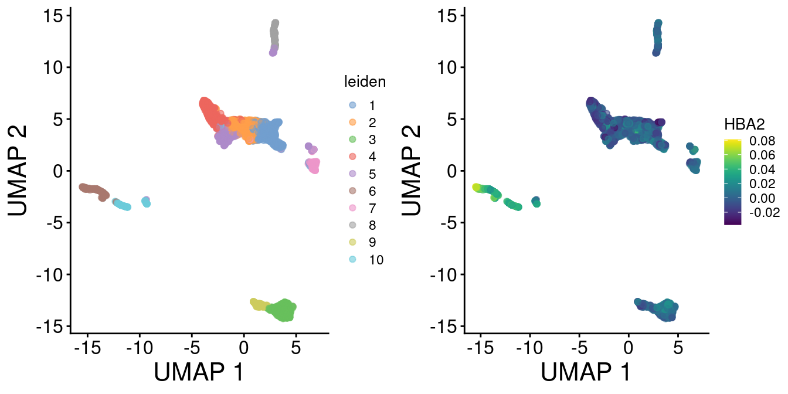
We can also visualize the corrected coordinates using a t-SNE plot. The strong separation between cells from different batches is consistent with the clustering results.
set.seed(1111001)
uncorrected <- runTSNE(uncorrected, dimred="PCA")
plotTSNE(uncorrected, colour_by="batch")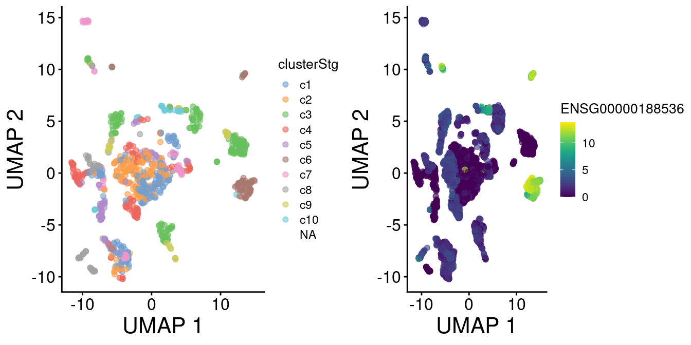
set.seed(1111001)
uncorrected <- runUMAP(uncorrected, dimred="PCA")
plotUMAP(uncorrected, colour_by="batch")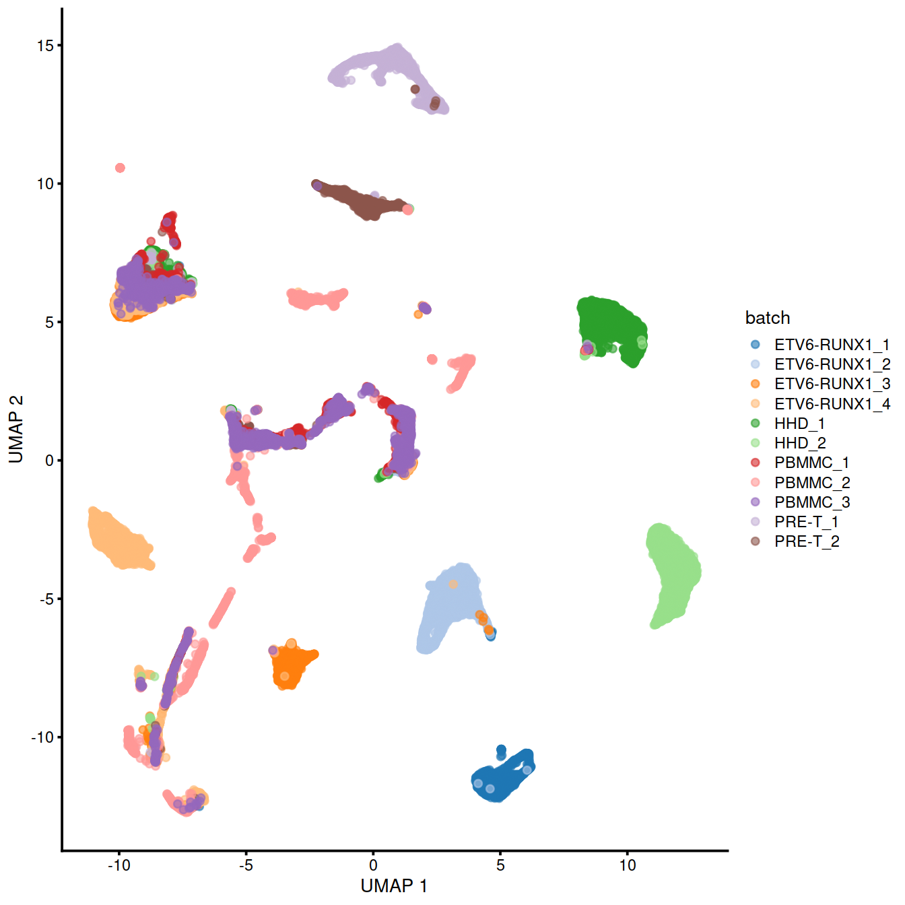
Of course, the other explanation for batch-specific clusters is that there are cell types that are unique to each batch. The degree of intermingling of cells from different batches is not an effective diagnostic when the batches involved might actually contain unique cell subpopulations. If a cluster only contains cells from a single batch, one can always debate whether that is caused by a failure of the correction method or if there is truly a batch-specific subpopulation. For example, do batch-specific metabolic or differentiation states represent distinct subpopulations? Or should they be merged together? We will not attempt to answer this here, only noting that each batch correction algorithm will make different (and possibly inappropriate) decisions on what constitutes “shared” and “unique” populations.
19.4 Linear regression
Batch effects in bulk RNA sequencing studies are commonly removed with linear regression. This involves fitting a linear model to each gene’s expression profile, setting the undesirable batch term to zero and recomputing the observations sans the batch effect, yielding a set of corrected expression values for downstream analyses. Linear modelling is the basis of the removeBatchEffect() function from the limma package (Ritchie et al. 2015) as well the comBat() function from the sva package (Leek et al. 2012).
To use this approach in a scRNA-seq context, we assume that the composition of cell subpopulations is the same across batches. We also assume that the batch effect is additive, i.e., any batch-induced fold-change in expression is the same across different cell subpopulations for any given gene. These are strong assumptions as batches derived from different individuals will naturally exhibit variation in cell type abundances and expression. Nonetheless, they may be acceptable when dealing with batches that are technical replicates generated from the same population of cells. (In fact, when its assumptions hold, linear regression is the most statistically efficient as it uses information from all cells to compute the common batch vector.) Linear modelling can also accommodate situations where the composition is known a priori by including the cell type as a factor in the linear model, but this situation is even less common.
We use the rescaleBatches() function from the batchelor package to remove the batch effect. This is roughly equivalent to applying a linear regression to the log-expression values per gene, with some adjustments to improve performance and efficiency. For each gene, the mean expression in each batch is scaled down until it is equal to the lowest mean across all batches. We deliberately choose to scale all expression values down as this mitigates differences in variance when batches lie at different positions on the mean-variance trend. (Specifically, the shrinkage effect of the pseudo-count is greater for smaller counts, suppressing any differences in variance across batches.) An additional feature of rescaleBatches() is that it will preserve sparsity in the input matrix for greater efficiency, whereas other methods like removeBatchEffect() will always return a dense matrix.
## class: SingleCellExperiment
## dim: 18431 47830
## metadata(0):
## assays(1): corrected
## rownames(18431): ENSG00000000003 ENSG00000000419 ... ENSG00000285486
## ENSG00000285492
## rowData names(0):
## colnames: NULL
## colData names(1): batch
## reducedDimNames(0):
## altExpNames(0):After clustering, we observe fewer clusters and these consist of mixtures of cells from the several replicates, consistent with the removal of the batch effect. This conclusion is supported by the apparent mixing of cells from different batches on the TSNE plot below. However, at least one batch-specific cluster is still present, indicating that the correction is not entirely complete. This is attributable to violation of one of the aforementioned assumptions, even in this simple case involving replicated batches.
set.seed(1010101010) # To ensure reproducibility of IRLBA.
rescaled.rb <- runPCA(rescaled.rb, subset_row=chosen.hvgs, exprs_values="corrected")
snn.gr <- buildSNNGraph(rescaled.rb, use.dimred="PCA")
clusters.resc <- igraph::cluster_walktrap(snn.gr)$membership
rescaled.rb$clusters.resc <- clusters.resc
tab.resc <- table(Cluster=clusters.resc, Batch=rescaled.rb$batch)
tab.resc## Batch
## Cluster ETV6-RUNX1_1 ETV6-RUNX1_2 ETV6-RUNX1_3 ETV6-RUNX1_4 HHD_1 HHD_2 PBMMC_1
## 1 2 2 4 3 2 2 135
## 2 239 499 55 223 700 225 116
## 3 0 0 0 2 0 0 0
## 4 1 0 9 2 0 2 31
## 5 0 1 2 11 0 0 0
## 6 0 0 0 0 0 0 0
## 7 1 25 22 1 139 25 106
## 8 0 0 19 96 0 0 0
## 9 0 0 0 0 0 0 0
## 10 0 0 117 0 0 0 7
## 11 16 210 1197 285 182 87 313
## 12 3 34 209 82 167 34 30
## 13 0 0 33 67 0 0 0
## 14 0 2 6 1 0 0 93
## 15 1 0 48 0 0 9 9
## 16 0 0 1 268 0 0 0
## 17 1 3 5 8 4 2 153
## 18 205 1490 542 292 976 1279 388
## 19 0 15 9 5 2 6 12
## 20 167 351 137 294 82 303 47
## 21 100 295 112 57 447 110 26
## 22 131 187 29 178 89 85 42
## 23 243 373 172 659 300 633 29
## 24 0 0 55 0 0 0 0
## 25 0 0 5 69 0 0 0
## 26 0 0 1 63 0 0 1
## 27 1 3 0 0 0 20 0
## 28 23 1 5 3 30 0 2
## 29 9 48 161 66 166 67 75
## 30 0 0 0 1 0 0 0
## 31 1624 2984 1001 2049 1139 2500 117
## 32 1 0 4 0 0 2 12
## 33 12 20 2 12 28 3 8
## 34 68 51 701 14 43 34 23
## 35 0 0 5 0 0 1 5
## 36 0 0 0 0 0 0 0
## 37 0 0 1 1 0 0 0
## 38 0 4 17 11 47 8 2
## 39 0 0 0 0 0 0 0
## 40 0 0 1 360 0 0 0
## 41 0 1 1 0 0 0 0
## 42 0 0 23 0 0 0 1
## 43 0 0 0 0 0 0 0
## 44 0 0 0 0 0 0 0
## 45 0 0 0 0 0 0 0
## 46 0 2 12 8 0 0 0
## 47 0 0 2 1 0 0 0
## 48 0 0 0 72 0 0 0
## 49 0 0 0 0 0 0 0
## 50 5 14 0 0 7 0 0
## 51 0 0 0 0 0 0 0
## 52 0 0 0 0 0 0 0
## 53 0 0 0 0 0 0 0
## 54 0 0 0 4 0 0 0
## 55 0 0 0 0 0 0 0
## 56 0 0 0 0 0 0 43
## 57 0 0 2 1 1 0 258
## 58 0 0 0 24 0 0 0
## Batch
## Cluster PBMMC_2 PBMMC_3 PRE-T_1 PRE-T_2
## 1 53 245 1 46
## 2 13 63 1339 638
## 3 100 0 0 0
## 4 0 19 1 25
## 5 60 16 0 1
## 6 95 0 0 0
## 7 24 118 0 143
## 8 112 0 0 0
## 9 72 0 0 0
## 10 0 50 0 5
## 11 183 881 26 314
## 12 255 81 21 101
## 13 30 13 0 1
## 14 2 164 0 0
## 15 0 40 0 19
## 16 13 0 0 0
## 17 83 522 1 188
## 18 122 800 185 202
## 19 9 29 0 18
## 20 5 27 98 41
## 21 25 29 810 203
## 22 1 30 47 13
## 23 8 24 304 60
## 24 0 8 0 1
## 25 8 3 0 0
## 26 20 1 0 0
## 27 0 0 0 0
## 28 17 9 0 3
## 29 295 265 28 265
## 30 64 0 0 0
## 31 333 535 599 1272
## 32 0 20 1 27
## 33 0 1 336 0
## 34 4 56 34 1
## 35 53 23 0 4
## 36 59 0 0 0
## 37 115 0 0 0
## 38 7 18 2 0
## 39 179 0 0 0
## 40 16 0 0 0
## 41 14 4 1 3
## 42 0 17 0 17
## 43 98 0 0 0
## 44 125 0 0 0
## 45 20 0 0 0
## 46 863 3 0 0
## 47 11 1 0 3
## 48 610 0 0 0
## 49 41 0 0 0
## 50 0 0 4 0
## 51 59 0 0 0
## 52 19 0 0 0
## 53 38 0 0 0
## 54 321 0 0 0
## 55 0 1 0 13
## 56 0 23 0 0
## 57 4 4 0 1
## 58 0 0 3 0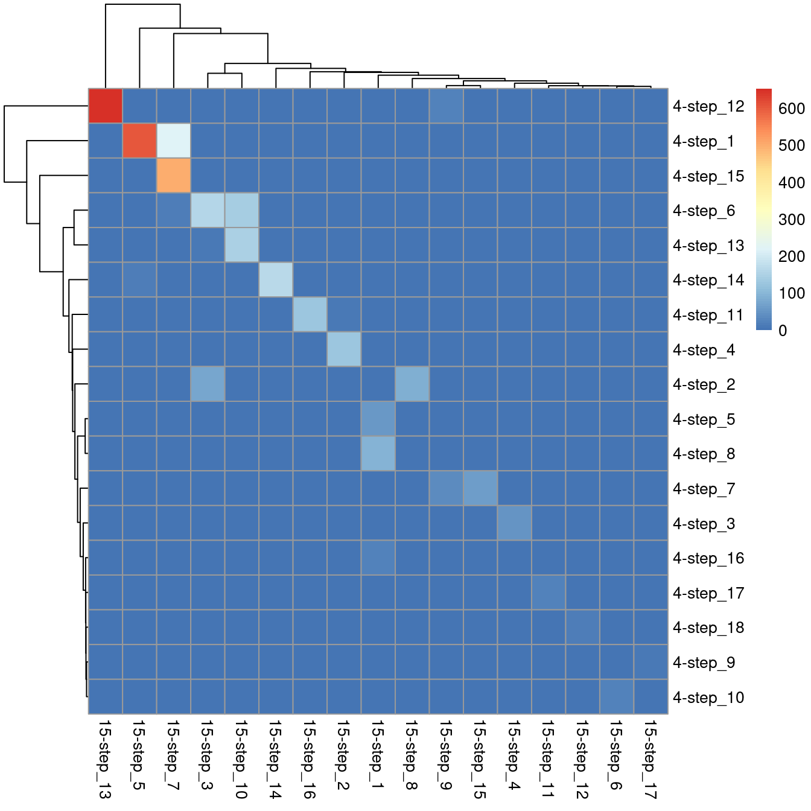
rescaled.rb <- runTSNE(rescaled.rb, dimred="PCA")
rescaled.rb$batch <- factor(rescaled.rb$batch)
p.batch <- plotTSNE(rescaled.rb, colour_by="batch")
p.clu <- plotTSNE(rescaled.rb, colour_by="clusters.resc")
gridExtra::grid.arrange(p.clu, p.batch, ncol=2)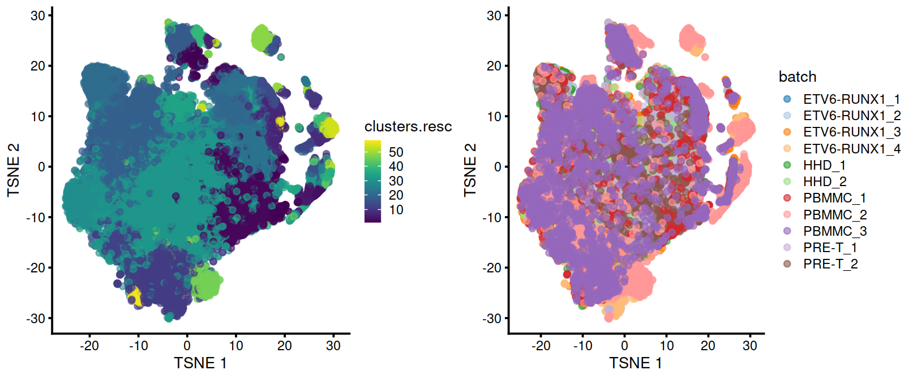
19.5 Performing MNN correction
19.5.1 Algorithm overview
Consider a cell a in batch A, and identify the cells in batch B that are nearest neighbors to a in the expression space defined by the selected features. Repeat this for a cell b in batch B, identifying its nearest neighbors in A. Mutual nearest neighbors (MNNs) are pairs of cells from different batches that belong in each other’s set of nearest neighbors. The reasoning is that MNN pairs represent cells from the same biological state prior to the application of a batch effect - see Haghverdi et al. (2018) for full theoretical details. Thus, the difference between cells in MNN pairs can be used as an estimate of the batch effect, the subtraction of which yields batch-corrected values.
Compared to linear regression, MNN correction does not assume that the population composition is the same or known beforehand. This is because it learns the shared population structure via identification of MNN pairs and uses this information to obtain an appropriate estimate of the batch effect. Instead, the key assumption of MNN-based approaches is that the batch effect is orthogonal to the biology in high-dimensional expression space. Violations reduce the effectiveness and accuracy of the correction, with the most common case arising from variations in the direction of the batch effect between clusters. Nonetheless, the assumption is usually reasonable as a random vector is very likely to be orthogonal in high-dimensional space.
19.5.2 Application to the data
The batchelor package provides an implementation of the MNN approach via the fastMNN() function. Unlike the MNN method originally described by Haghverdi et al. (2018), the fastMNN() function performs PCA to reduce the dimensions beforehand and speed up the downstream neighbor detection steps.
We apply it to our two PBMC batches to remove the batch effect across the highly variable genes in chosen.hvgs. To reduce computational work and technical noise, all cells in all batches are projected into the low-dimensional space defined by the top d principal components. Identification of MNNs and calculation of correction vectors are then performed in this low-dimensional space.
# Using randomized SVD here, as this is faster than
# irlba for file-backed matrices.
set.seed(1000101001)
mnn.out <- fastMNN(
rescaled.mbn,
auto.merge=TRUE,
d=50,
k=20,
subset.row=chosen.hvgs,
BSPARAM=BiocSingular::RandomParam(deferred=TRUE)
)
mnn.out## class: SingleCellExperiment
## dim: 12466 47830
## metadata(2): merge.info pca.info
## assays(1): reconstructed
## rownames(12466): ENSG00000000003 ENSG00000000457 ... ENSG00000285476
## ENSG00000285492
## rowData names(1): rotation
## colnames: NULL
## colData names(1): batch
## reducedDimNames(1): corrected
## altExpNames(0):The function returns a SingleCellExperiment object containing corrected values for downstream analyses like clustering or visualization. Each column of mnn.out corresponds to a cell in one of the batches, while each row corresponds to an input gene in chosen.hvgs. The batch field in the column metadata contains a vector specifying the batch of origin of each cell.
## [1] ETV6-RUNX1_1 ETV6-RUNX1_1 ETV6-RUNX1_1 ETV6-RUNX1_1 ETV6-RUNX1_1
## [6] ETV6-RUNX1_1
## 11 Levels: ETV6-RUNX1_1 ETV6-RUNX1_2 ETV6-RUNX1_3 ETV6-RUNX1_4 HHD_1 ... PRE-T_2The corrected matrix in the reducedDims() contains the low-dimensional corrected coordinates for all cells, which we will use in place of the PCs in our downstream analyses.
## [1] 47830 50A reconstructed matrix in the assays() contains the corrected expression values for each gene in each cell, obtained by projecting the low-dimensional coordinates in corrected back into gene expression space. We do not recommend using this for anything other than visualization.
## [1] 12466 47830## <5 x 3> matrix of class LowRankMatrix and type "double":
## [,1] [,2] [,3]
## ENSG00000000003 -8.970458e-05 -6.411674e-05 -6.896130e-05
## ENSG00000000457 6.004816e-05 5.014359e-04 2.004637e-04
## ENSG00000000938 -3.567196e-04 3.084119e-04 4.221600e-04
## ENSG00000001167 2.328682e-04 7.270576e-04 6.971589e-04
## ENSG00000001461 -8.717612e-04 -6.734327e-04 -7.530539e-04The most relevant parameter for tuning fastMNN() is k, which specifies the number of nearest neighbors to consider when defining MNN pairs. This can be interpreted as the minimum anticipated frequency of any shared cell type or state in each batch. Increasing k will generally result in more aggressive merging as the algorithm is more generous in matching subpopulations across batches. It can occasionally be desirable to increase k if one clearly sees that the same cell types are not being adequately merged across batches.
19.5.3 Correction diagnostics
We cluster on the low-dimensional corrected coordinates to obtain a partitioning of the cells that serves as a proxy for the population structure. If the batch effect is successfully corrected, clusters corresponding to shared cell types or states should contain cells from multiple batches. We see that all clusters contain contributions from each batch after correction, consistent with our expectation that the two batches are replicates of each other.
library(scran)
snn.gr <- buildSNNGraph(mnn.out, use.dimred="corrected")
clusters.mnn <- igraph::cluster_walktrap(snn.gr)$membership
mnn.out$clusters.mnn <- clusters.mnn
tab.mnn <- table(Cluster=clusters.mnn, Batch=mnn.out$batch)
tab.mnn## Batch
## Cluster ETV6-RUNX1_1 ETV6-RUNX1_2 ETV6-RUNX1_3 ETV6-RUNX1_4 HHD_1 HHD_2 PBMMC_1
## 1 187 265 46 277 91 133 19
## 2 0 0 2 11 0 1 27
## 3 3 1 40 279 0 6 0
## 4 0 0 0 0 13 2 5
## 5 14 177 1546 268 248 98 614
## 6 0 0 0 0 1 0 71
## 7 0 0 6 1 5 12 4
## 8 8 1 6 4 94 80 73
## 9 0 3 4 7 4 2 126
## 10 2 138 3 3 722 41 0
## 11 0 1 25 46 1 3 5
## 12 0 2 3 1 10 1 339
## 13 0 1 3 1 9 0 118
## 14 1675 1800 409 1479 1532 2588 109
## 15 0 0 19 44 0 6 3
## 16 70 186 61 62 165 71 14
## 17 6 32 108 35 88 45 69
## 18 0 0 0 0 0 1 36
## 19 0 0 30 61 0 1 0
## 20 0 1 20 32 0 1 0
## 21 2 0 12 10 0 1 15
## 22 0 1 1 0 6 2 1
## 23 1 1 5 2 217 3 85
## 24 1 1 12 22 0 0 0
## 25 0 8 32 210 6 5 2
## 26 398 3055 1460 1011 665 1360 38
## 27 267 485 144 584 211 550 24
## 28 0 13 2 4 1 5 4
## 29 3 42 236 67 86 16 22
## 30 181 311 63 295 130 342 38
## 31 0 1 1 1 0 0 11
## 32 0 0 1 0 7 0 53
## 33 1 2 2 1 2 0 2
## 34 4 58 215 73 142 21 35
## 35 21 0 4 3 3 1 1
## 36 1 2 28 95 0 8 5
## 37 0 8 8 1 1 1 11
## 38 1 0 5 3 1 1 2
## 39 0 0 2 2 0 1 1
## 40 1 0 2 1 1 0 0
## 41 4 10 39 33 36 17 5
## 42 1 2 16 60 0 0 0
## 43 0 0 5 27 0 0 0
## 44 1 1 36 74 0 0 0
## 45 0 0 19 30 0 0 0
## 46 0 0 0 0 0 1 14
## 47 0 0 7 0 0 1 6
## 48 0 4 18 35 46 8 2
## 49 0 0 19 37 0 0 1
## 50 0 0 0 0 0 0 23
## 51 0 2 2 1 7 0 32
## 52 0 0 0 0 0 1 19
## Batch
## Cluster PBMMC_2 PBMMC_3 PRE-T_1 PRE-T_2
## 1 4 22 47 3
## 2 79 17 1 11
## 3 543 8 1 15
## 4 3 3 1244 788
## 5 1148 965 25 367
## 6 57 81 0 26
## 7 5 4 320 1054
## 8 15 27 722 270
## 9 250 530 3 188
## 10 1 6 1 0
## 11 117 30 0 12
## 12 201 753 1 6
## 13 48 133 2 0
## 14 44 121 30 49
## 15 118 18 0 17
## 16 22 7 846 209
## 17 336 220 22 183
## 18 49 44 0 6
## 19 35 9 0 0
## 20 78 13 0 15
## 21 103 15 0 25
## 22 8 6 208 78
## 23 48 69 2 13
## 24 1 7 0 1
## 25 234 15 1 2
## 26 34 148 7 1
## 27 21 37 4 11
## 28 11 18 1 13
## 29 158 160 13 47
## 30 8 29 24 1
## 31 29 33 0 11
## 32 23 77 0 0
## 33 2 0 296 14
## 34 249 196 8 67
## 35 18 18 0 2
## 36 117 9 0 3
## 37 22 15 0 12
## 38 18 5 1 4
## 39 14 3 0 5
## 40 18 2 0 3
## 41 34 81 5 64
## 42 0 2 0 0
## 43 1 0 1 1
## 44 168 22 1 0
## 45 2 0 0 0
## 46 33 39 0 5
## 47 54 16 0 4
## 48 12 34 3 9
## 49 0 3 1 0
## 50 14 17 0 7
## 51 17 28 0 4
## 52 34 28 0 2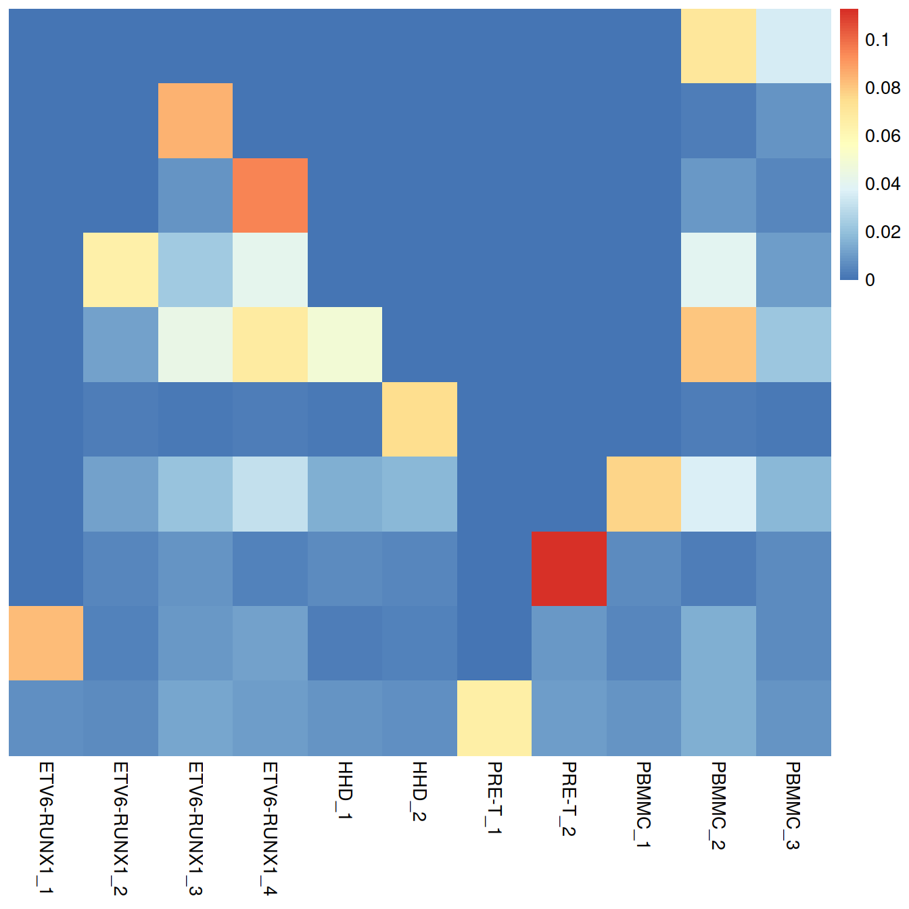
We can also visualize the corrected coordinates using a t-SNE plot. The presence of visual clusters containing cells from both batches provides a comforting illusion that the correction was successful.
library(scater)
set.seed(0010101010)
mnn.out <- runTSNE(mnn.out, dimred="corrected")
plotTSNE(mnn.out, colour_by="batch")
p.batch <- plotTSNE(mnn.out, colour_by="batch")
p.clu <- plotTSNE(mnn.out, colour_by="clusters.mnn")
#gridExtra::grid.arrange(p.clu, p.batch, ncol=2)
gridExtra::grid.arrange(p.clu, p.batch+facet_wrap(~mnn.out$type), ncol=2)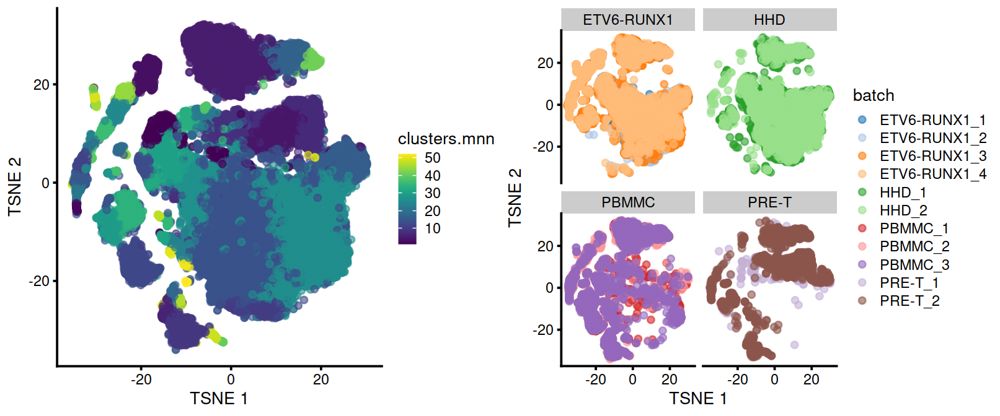
For fastMNN(), one useful diagnostic is the proportion of variance within each batch that is lost during MNN correction. Specifically, this refers to the within-batch variance that is removed during orthogonalization with respect to the average correction vector at each merge step. This is returned via the lost.var field in the metadata of mnn.out, which contains a matrix of the variance lost in each batch (column) at each merge step (row).
## ETV6-RUNX1_1 ETV6-RUNX1_2 ETV6-RUNX1_3 ETV6-RUNX1_4 HHD_1
## [1,] 0.000000000 0.000000000 0.000000000 0.000000000 0.000000000
## [2,] 0.000000000 0.000000000 0.084463640 0.000000000 0.000000000
## [3,] 0.000000000 0.000000000 0.008280342 0.095017041 0.000000000
## [4,] 0.000000000 0.064389261 0.023261243 0.041177341 0.000000000
## [5,] 0.000000000 0.012352895 0.043870823 0.067557228 0.048516656
## [6,] 0.000000000 0.002779509 0.002084513 0.002706268 0.002204974
## [7,] 0.000000000 0.011868285 0.020881803 0.030617693 0.015255640
## [8,] 0.000000000 0.005304089 0.008755495 0.003861718 0.005637460
## [9,] 0.082254851 0.003885598 0.009924919 0.011583848 0.002969818
## [10,] 0.007424601 0.006740011 0.012982525 0.011087357 0.008901993
## HHD_2 PRE-T_1 PRE-T_2 PBMMC_1 PBMMC_2 PBMMC_3
## [1,] 0.000000000 0.0000000 0.000000000 0.000000000 0.070331394 0.035235202
## [2,] 0.000000000 0.0000000 0.000000000 0.000000000 0.003311880 0.008051414
## [3,] 0.000000000 0.0000000 0.000000000 0.000000000 0.009652129 0.004678349
## [4,] 0.000000000 0.0000000 0.000000000 0.000000000 0.039974155 0.011177234
## [5,] 0.000000000 0.0000000 0.000000000 0.000000000 0.080780029 0.021861199
## [6,] 0.074470370 0.0000000 0.000000000 0.000000000 0.002955670 0.002106351
## [7,] 0.017966721 0.0000000 0.000000000 0.076763560 0.036944237 0.016965467
## [8,] 0.005220124 0.0000000 0.112508397 0.006247915 0.003233413 0.006395939
## [9,] 0.003663400 0.0000000 0.009135704 0.004539476 0.015052363 0.005845391
## [10,] 0.006854063 0.0659627 0.010755769 0.008591078 0.015418877 0.008891157tmpData <- metadata(mnn.out)$merge.info$lost.var
pheatmap::pheatmap(tmpData,
border_color = NA,
drop_levels = TRUE,
cluster_rows = FALSE,
cluster_cols = FALSE
)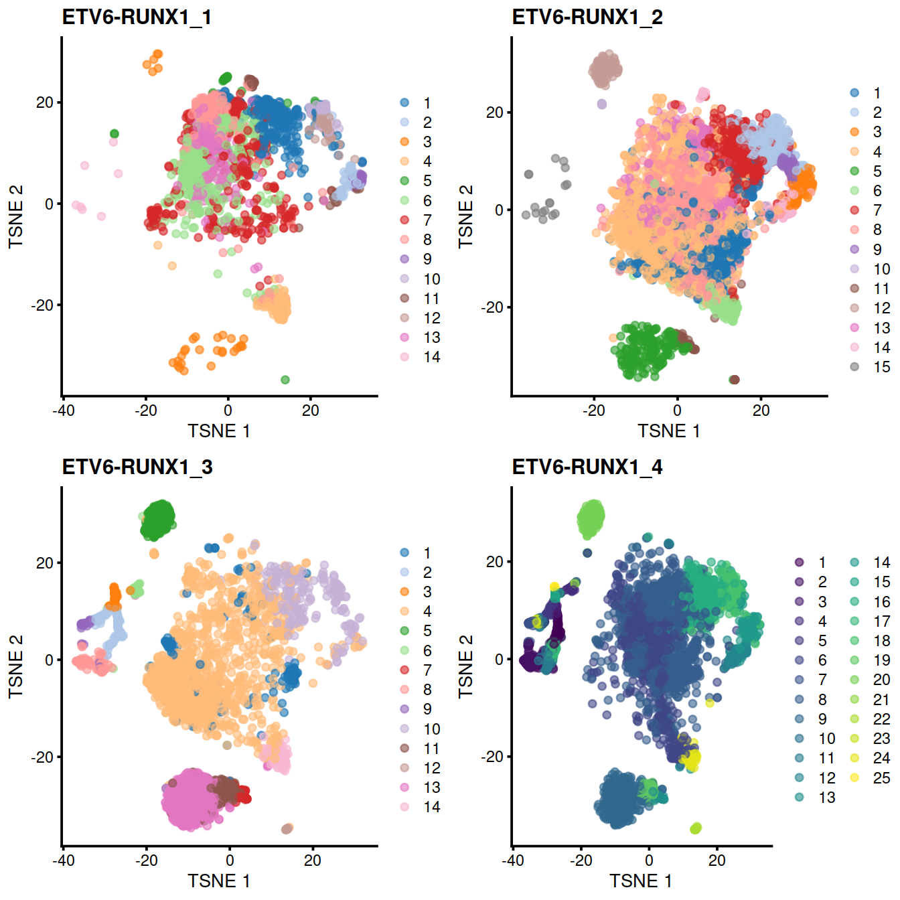
Large proportions of lost variance (>10%) suggest that correction is removing genuine biological heterogeneity. This would occur due to violations of the assumption of orthogonality between the batch effect and the biological subspace (Haghverdi et al. 2018). In this case, the proportion of lost variance is small, indicating that non-orthogonality is not a major concern.
19.6 Preserving biological heterogeneity
19.6.1 Comparison to within-batch clusters
Another useful diagnostic check is to compare the clustering within each batch to the clustering of the merged data. Accurate data integration should preserve variance within each batch as there should be nothing to remove between cells in the same batch. This check complements the previously mentioned diagnostics that only focus on the removal of differences between batches. Specifically, it protects us against cases where the correction method simply aggregates all cells together, which would achieve perfect mixing but also discard the biological heterogeneity of interest.
Ideally, we should see a many-to-1 mapping where the across-batch clustering is nested inside the within-batch clusterings. This indicates that any within-batch structure was preserved after correction while acknowledging that greater resolution is possible with more cells. In practice, more discrepancies can be expected even when the correction is perfect, due to the existence of closely related clusters that were arbitrarily separated in the within-batch clustering. As a general rule, we can be satisfied with the correction if the vast majority of entries in Figure 13.4 are zero, though this may depend on whether specific clusters of interest are gained or lost.
One heatmap is generated for each of the PBMC 3K and 4K datasets, where each entry is colored according to the number of cells with each pair of labels (before and after correction).
library(pheatmap)
# For the first batch (adding +10 for a smoother color transition
# from zero to non-zero counts for any given matrix entry).
batchPlace <- 1
tmpInd <- mnn.out$batch==levels(mnn.out$batch)[batchPlace]
tab <- table(paste("after", clusters.mnn[tmpInd]),
paste("before", colLabels(rescaled.mbn[[batchPlace]])))
heat1 <- pheatmap(log10(tab+10), cluster_row=FALSE, cluster_col=FALSE,
main=sprintf("%s comparison", splVec[batchPlace]), silent=TRUE)
# For the second batch.
batchPlace <- 2
tmpInd <- mnn.out$batch==levels(mnn.out$batch)[batchPlace]
tab <- table(paste("after", clusters.mnn[tmpInd]),
paste("before", colLabels(rescaled.mbn[[batchPlace]])))
heat2 <- pheatmap(log10(tab+10), cluster_row=FALSE, cluster_col=FALSE,
main=sprintf("%s comparison", splVec[batchPlace]), silent=TRUE)
gridExtra::grid.arrange(heat1[[4]], heat2[[4]])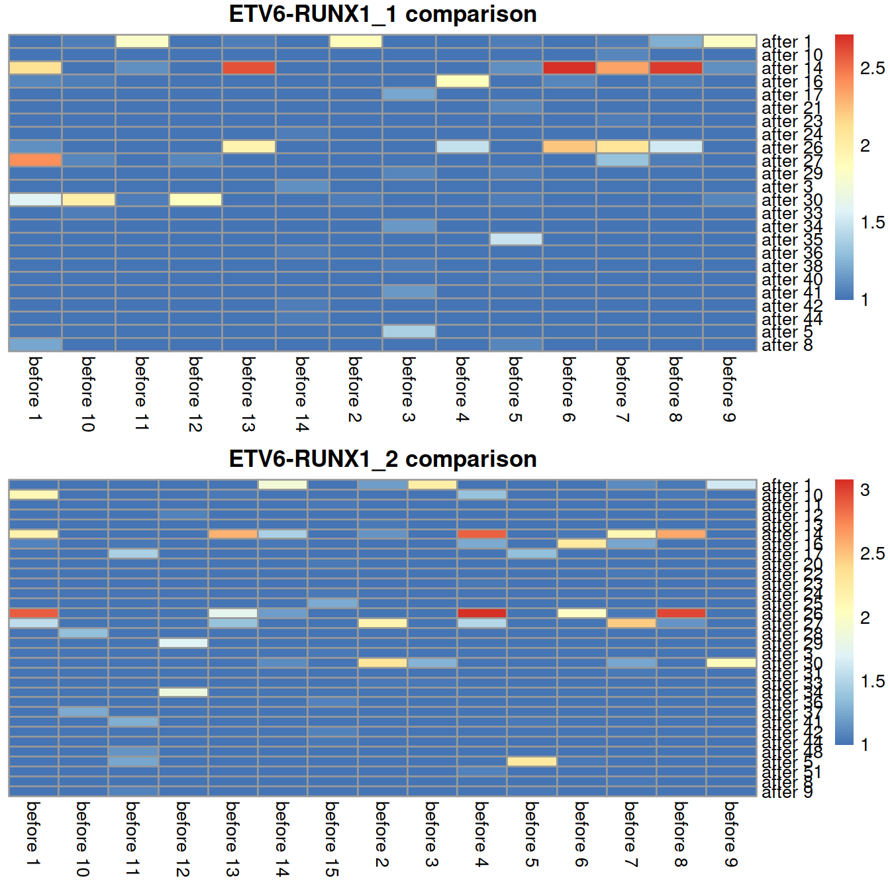
Another evaluation approach is to compute the coassignment probabilities (Section 10.6), i.e., the probability that cells from two within-batch clusters are clustered together in the across-batch clustering. High probabilities off the diagonal in Figure 13.5 indicate that within-batch clusters are merged in the across-batch analysis. We would generally expect low off-diagonal probabilities for most pairs of clusters, though this may not be reasonably possible if the within-batch clusters were poorly separated in the first place.
Coassignment probabilities for the within-batch clusters, based on coassignment of cells in the across-batch clusters obtained after MNN correction. One heatmap is generated for each of the GSM3872434 and GSM3872435, where each entry is colored according to the coassignment probability between each pair of within-batch clusters:
# For the first batch.
batchPlace <- 1
tmpInd <- mnn.out$batch==levels(mnn.out$batch)[batchPlace]
tab <- coassignProb(colLabels(rescaled.mbn[[batchPlace]]), clusters.mnn[tmpInd])
heat1 <- pheatmap(tab, cluster_row=FALSE, cluster_col=FALSE,
col=rev(viridis::magma(100)), main=sprintf("%s probabilities", splVec[batchPlace]), silent=TRUE)
# For the second batch.
batchPlace <- 2
tmpInd <- mnn.out$batch==levels(mnn.out$batch)[batchPlace]
tab <- coassignProb(colLabels(rescaled.mbn[[batchPlace]]), clusters.mnn[tmpInd])
heat2 <- pheatmap(tab, cluster_row=FALSE, cluster_col=FALSE,
col=rev(viridis::magma(100)), main=sprintf("%s probabilities", splVec[batchPlace]), silent=TRUE)
gridExtra::grid.arrange(heat1[[4]], heat2[[4]])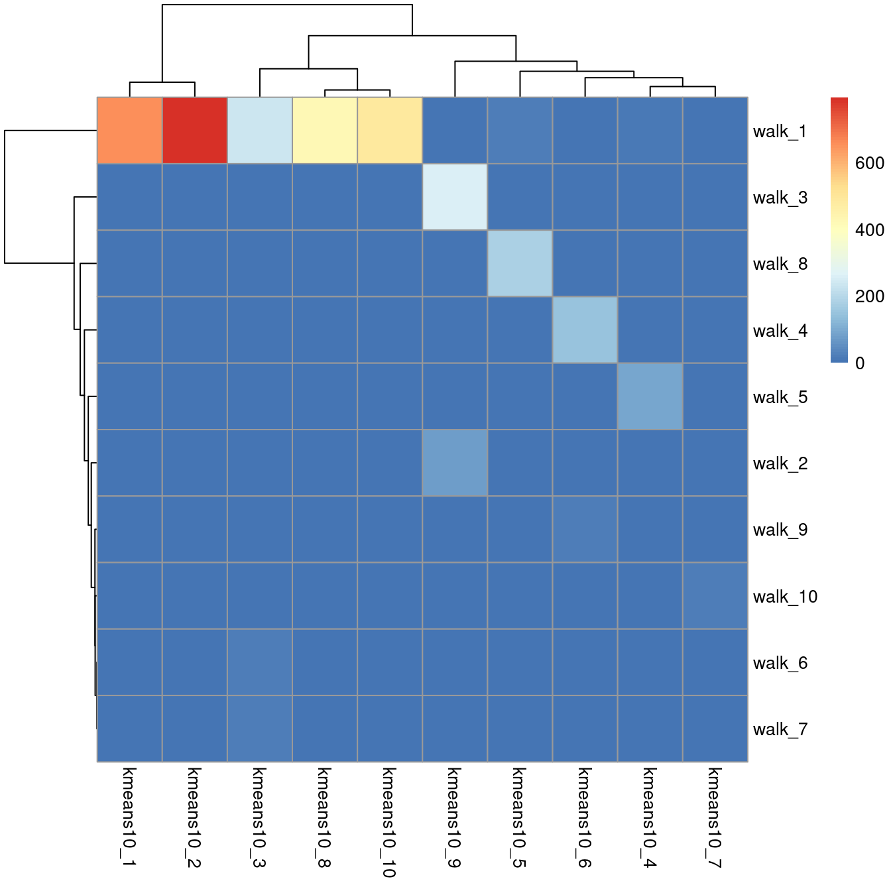
Finally, we can summarize the agreement between clusterings by computing the Rand index. This provides a simple metric that we can use to assess the preservation of variation by different correction methods. Larger rand indices (i.e., closer to 1) are more desirable, though this must be balanced against the ability of each method to actually remove the batch effect.
suppressMessages(library(fossil))
batchPlace <- 1
tmpInd <- mnn.out$batch==levels(mnn.out$batch)[batchPlace]
ri1 <- rand.index(as.integer(clusters.mnn[tmpInd]),
as.integer(colLabels(rescaled.mbn[[batchPlace]])))
ri1## [1] 0.6663171batchPlace <- 2
tmpInd <- mnn.out$batch==levels(mnn.out$batch)[batchPlace]
ri2 <- rand.index(as.integer(clusters.mnn[tmpInd]),
as.integer(colLabels(rescaled.mbn[[batchPlace]])))
ri2## [1] 0.714263819.6.2 Encouraging consistency with marker genes
In some situations, we will already have performed within-batch analyses to characterize salient aspects of population heterogeneity. This is not uncommon when merging datasets from different sources where each dataset has already been analyzed, annotated and interpreted separately. It is subsequently desirable for the integration procedure to retain these “known interesting” aspects of each dataset in the merged dataset. We can encourage this outcome by using the marker genes within each dataset as our selected feature set for fastMNN() and related methods. This focuses on the relevant heterogeneity and represents a semi-supervised approach that is a natural extension of the strategy presented in th feature selection section.
We identify the top marker genes from pairwise Wilcoxon ranked sum tests between every pair of clusters within each batch, analogous to the method used by SingleR (Chapter 12). In this case, we use the top 10 marker genes but any value can be used depending on the acceptable trade-off between signal and noise (and speed). We then take the union across all comparisons in all batches and use that in place of our HVG set in fastMNN().
# Recall that groups for marker detection
# are automatically defined from 'colLabels()'.
stats1 <- pairwiseWilcox(rescaled.mbn[[1]], direction="up")
markers1 <- getTopMarkers(stats1[[1]], stats1[[2]], n=10)
stats2 <- pairwiseWilcox(rescaled.mbn[[2]], direction="up")
markers2 <- getTopMarkers(stats2[[1]], stats2[[2]], n=10)
stats3 <- pairwiseWilcox(rescaled.mbn[[3]], direction="up")
markers3 <- getTopMarkers(stats3[[1]], stats3[[2]], n=10)
stats4 <- pairwiseWilcox(rescaled.mbn[[4]], direction="up")
markers4 <- getTopMarkers(stats4[[1]], stats4[[2]], n=10)
marker.set <- unique(unlist(c(unlist(markers1), unlist(markers2), unlist(markers3), unlist(markers4))))
length(marker.set) # getting the total number of genes selected in this manner.## [1] 740set.seed(1000110)
mnn.out2 <- fastMNN(
rescaled.mbn[1:4],
subset.row=marker.set,
BSPARAM=BiocSingular::RandomParam(deferred=TRUE))A quick inspection indicates that the original within-batch structure is indeed preserved in the corrected data. This highlights the utility of a marker-based feature set for integrating datasets that have already been characterized separately in a manner that preserves existing interpretations of each dataset. We note that some within-batch clusters have merged, most likely due to the lack of robust separation in the first place, though this may also be treated as a diagnostic on the appropriateness of the integration depending on the context.
mnn.out2 <- runTSNE(mnn.out2, dimred="corrected")
batchVec <- levels(mnn.out$batch)
gridExtra::grid.arrange(
plotTSNE(mnn.out2[,mnn.out2$batch==batchVec[1]], colour_by=I(colLabels(rescaled.mbn[[1]]))) + ggtitle(batchVec[1]),
plotTSNE(mnn.out2[,mnn.out2$batch==batchVec[2]], colour_by=I(colLabels(rescaled.mbn[[2]]))) + ggtitle(batchVec[2]),
plotTSNE(mnn.out2[,mnn.out2$batch==batchVec[3]], colour_by=I(colLabels(rescaled.mbn[[3]]))) + ggtitle(batchVec[3]),
plotTSNE(mnn.out2[,mnn.out2$batch==batchVec[4]], colour_by=I(colLabels(rescaled.mbn[[4]]))) + ggtitle(batchVec[4]),
ncol=2
)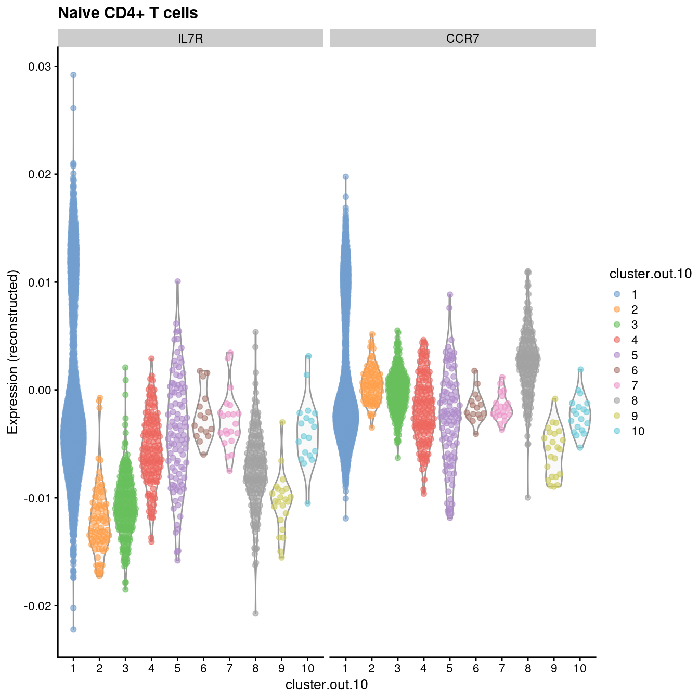
19.6.3 Using the corrected values
it is preferable to perform DE analyses using the uncorrected expression values with blocking on the batch. This strategy is based on the expectation that any genuine DE between clusters should still be present in a within-batch comparison where batch effects are absent. It penalizes genes that exhibit inconsistent DE across batches, thus protecting against misleading conclusions when a population in one batch is aligned to a similar-but-not-identical population in another batch. We demonstrate this approach below using a blocked t-test to detect markers in the PBMC dataset, where the presence of the same pattern across clusters within each batch is reassuring. If integration is performed across multiple conditions, it is even more important to use the uncorrected expression values for downstream analyses - see Section 14.5.2 for a discussion.
m.out <- findMarkers(
uncorrected,
clusters.mnn,
block=uncorrected$batch, # TODO batch or type?
direction="up",
lfc=1,
row.data=rowData(uncorrected)[,
c("ensembl_gene_id","Symbol"),
drop=FALSE])## Symbol Top p.value FDR
## ENSG00000034510 TMSB10 1 4.822073e-221 5.227979e-218
## ENSG00000107447 DNTT 1 7.308739e-98 1.603659e-95
## ENSG00000117632 STMN1 1 0.000000e+00 0.000000e+00
## ENSG00000124766 SOX4 1 5.664909e-46 7.970224e-44
## ENSG00000164104 HMGB2 1 0.000000e+00 0.000000e+00
## ENSG00000170540 ARL6IP1 1 4.344847e-76 7.850968e-74
## ENSG00000189403 HMGB1 1 0.000000e+00 0.000000e+00
## ENSG00000196230 TUBB 1 2.552552e-246 3.920507e-243
## ENSG00000198034 RPS4X 1 7.992635e-172 5.079733e-169
## ENSG00000198830 HMGN2 1 0.000000e+00 0.000000e+00
## ENSG00000204287 HLA-DRA 1 0.000000e+00 0.000000e+00
## ENSG00000205542 TMSB4X 1 9.852209e-283 2.017623e-279
## ENSG00000205581 HMGN1 1 2.026161e-155 8.684690e-153
## ENSG00000251562 MALAT1 1 1.588821e-234 2.091683e-231
## ENSG00000272398 CD24 1 6.506038e-136 2.032420e-133
## ENSG00000019582 CD74 2 9.509121e-314 2.921043e-310
## ENSG00000111348 ARHGDIB 2 1.072067e-66 1.864081e-64
## ENSG00000117724 CENPF 2 6.841406e-07 6.150925e-05
## ENSG00000131747 TOP2A 2 3.810227e-24 4.256139e-22
## ENSG00000164611 PTTG1 2 5.292404e-57 8.337119e-55Expression level for the top gene, ENSG00000034510:
geneEnsId <- rownames(demo)[1]
plotExpression(uncorrected, x=I(factor(clusters.mnn)),
features=geneEnsId, colour_by="batch") + facet_wrap(~colour_by)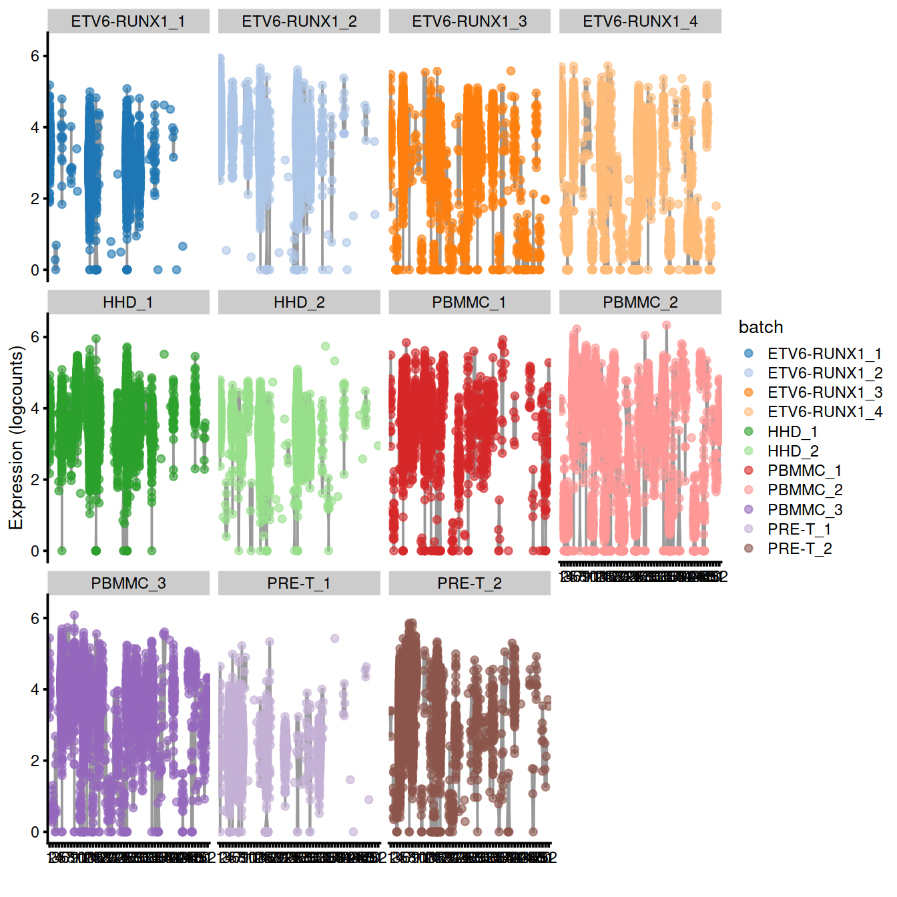
19.7 Challenge Same but with an ordered merging
We will first merge replicates in each sample group separately, then sample groups, starting with the group with the larger number of ‘cell types’.
Hint: use the merge.order option in fastMNN ( … maybe with “list( list(1,2,3,4), list(9,10,11), list(5,6), list(7,8) )” )
# Using randomized SVD here, as this is faster than
# irlba for file-backed matrices.
set.seed(1000101001)
rm(mnn.out)
mnn.out <- fastMNN(rescaled.mbn,
merge.order=list( list(1,2,3,4), list(9,10,11), list(5,6), list(7,8) ),
d=50, k=20, subset.row=chosen.hvgs,
BSPARAM=BiocSingular::RandomParam(deferred=TRUE))
mnn.out## class: SingleCellExperiment
## dim: 12466 47830
## metadata(2): merge.info pca.info
## assays(1): reconstructed
## rownames(12466): ENSG00000000003 ENSG00000000457 ... ENSG00000285476
## ENSG00000285492
## rowData names(1): rotation
## colnames: NULL
## colData names(1): batch
## reducedDimNames(1): corrected
## altExpNames(0):mnn.out$batch <- factor(mnn.out$batch)
mnn.out$type <- gsub("_[1-4]","",mnn.out$batch)
mnn.out$type <- factor(mnn.out$type)#class(mnn.out$batch)
#head(mnn.out$batch)
#dim(reducedDim(mnn.out, "corrected"))
#assay(mnn.out, "reconstructed")
print(dim(assay(mnn.out, "reconstructed")))## [1] 12466 47830## <5 x 3> matrix of class LowRankMatrix and type "double":
## [,1] [,2] [,3]
## ENSG00000000003 -1.272426e-04 -6.787507e-05 -5.702688e-05
## ENSG00000000457 -3.356405e-05 4.087098e-04 1.054453e-04
## ENSG00000000938 -2.351897e-03 -4.617906e-04 -3.513377e-04
## ENSG00000001167 -6.807745e-05 2.264625e-04 2.274302e-04
## ENSG00000001461 -2.447150e-04 -4.125638e-05 -2.362878e-04Diagnostic table and plots:
library(scran)
snn.gr <- buildSNNGraph(mnn.out, use.dimred="corrected")
clusters.mnn <- igraph::cluster_walktrap(snn.gr)$membership
mnn.out$clusters.mnn <- sprintf("c%s", clusters.mnn)
tab.mnn <- table(Cluster=mnn.out$clusters.mnn, Batch=mnn.out$batch)
tab.mnn## Batch
## Cluster ETV6-RUNX1_1 ETV6-RUNX1_2 ETV6-RUNX1_3 ETV6-RUNX1_4 HHD_1 HHD_2 PBMMC_1
## c1 0 0 2 1 0 2 1
## c10 400 582 203 925 375 644 19
## c11 1 3 46 162 3 4 0
## c12 0 0 21 67 0 1 1
## c13 98 153 14 120 31 61 41
## c14 0 0 20 69 0 2 0
## c15 2 0 13 22 0 1 16
## c16 1 0 21 37 1 3 5
## c17 1 2 37 124 0 3 3
## c18 12 136 1367 230 206 89 253
## c19 132 251 48 218 110 308 8
## c2 1526 1787 418 1541 1030 1922 39
## c20 9 33 63 20 26 55 148
## c21 0 0 3 3 0 1 7
## c22 1 5 16 8 14 4 33
## c23 0 1 15 22 0 0 0
## c24 93 165 31 186 97 109 11
## c25 213 8 4 6 332 134 34
## c26 0 0 1 0 1 1 22
## c27 0 1 0 1 15 1 39
## c28 0 2 0 3 2 2 101
## c29 0 8 7 1 1 1 11
## c3 5 0 8 5 36 22 45
## c30 0 2 1 0 1 0 48
## c31 0 1 19 21 0 0 1
## c32 0 0 3 1 0 0 10
## c33 0 1 20 38 0 4 2
## c34 0 0 0 0 0 0 35
## c35 1 0 2 1 1 0 0
## c36 129 2690 860 571 520 1617 20
## c37 0 4 23 137 0 4 0
## c38 4 11 37 31 34 18 6
## c39 4 57 229 73 143 24 38
## c4 105 480 106 107 428 147 23
## c40 0 12 3 4 1 5 4
## c41 0 0 0 0 0 1 2
## c42 56 29 437 10 25 18 0
## c43 1 0 5 4 1 1 3
## c44 1 0 0 0 10 5 13
## c45 2 43 218 66 83 13 19
## c46 0 0 0 1 2 0 27
## c47 0 1 1 1 1 0 13
## c48 0 0 3 2 0 3 1
## c49 2 1 0 0 3 1 4
## c5 0 0 3 10 0 0 29
## c50 0 0 6 111 3 6 3
## c51 3 3 25 130 0 1 0
## c52 0 0 1 0 1 1 16
## c53 21 0 3 3 1 0 3
## c54 1 2 15 31 0 0 0
## c55 0 0 2 0 0 0 5
## c56 0 0 12 8 0 0 0
## c57 0 4 17 34 46 8 2
## c58 1 2 3 1 13 6 36
## c59 6 1 0 1 15 1 23
## c6 7 66 275 66 119 48 36
## c60 0 0 2 0 0 1 1
## c61 0 0 15 25 0 0 0
## c62 0 0 1 1 0 0 364
## c63 0 1 0 0 0 1 19
## c64 0 0 0 0 0 0 7
## c65 0 0 4 22 0 0 0
## c66 0 0 8 0 1 0 1
## c7 9 19 5 7 36 15 195
## c8 6 48 5 2 782 118 173
## c9 0 0 0 2 1 0 65
## Batch
## Cluster PBMMC_2 PBMMC_3 PRE-T_1 PRE-T_2
## c1 3 2 25 879
## c10 26 57 18 3
## c11 213 22 2 15
## c12 0 5 0 0
## c13 22 49 15 2
## c14 12 8 0 1
## c15 111 16 0 21
## c16 109 24 0 14
## c17 114 8 0 6
## c18 1001 915 25 347
## c19 20 37 27 3
## c2 46 105 3 9
## c20 36 226 220 328
## c21 40 8 1 16
## c22 227 58 7 42
## c23 1 6 0 0
## c24 4 27 33 1
## c25 47 60 3 19
## c26 0 1 795 577
## c27 17 29 286 62
## c28 140 250 3 86
## c29 22 15 0 12
## c3 13 18 534 226
## c30 56 166 0 2
## c31 58 11 0 0
## c32 61 128 0 25
## c33 115 23 0 0
## c34 25 20 0 15
## c35 18 2 0 3
## c36 31 152 3 3
## c37 386 5 0 9
## c38 27 67 3 25
## c39 262 229 9 66
## c4 25 15 819 179
## c40 11 18 1 13
## c41 3 2 440 114
## c42 0 3 0 0
## c43 19 4 1 3
## c44 10 7 222 38
## c45 140 168 14 48
## c46 21 26 0 5
## c47 27 100 0 52
## c48 14 3 0 3
## c49 5 11 69 31
## c5 72 26 0 9
## c50 152 16 1 14
## c51 214 3 1 0
## c52 37 46 0 3
## c53 7 14 3 1
## c54 0 0 0 0
## c55 35 8 0 1
## c56 23 3 0 0
## c57 25 76 3 30
## c58 16 26 1 5
## c59 8 14 172 12
## c6 198 223 20 203
## c60 14 8 0 3
## c61 1 0 0 0
## c62 68 7 0 2
## c63 34 27 1 3
## c64 9 10 0 0
## c65 0 0 1 0
## c66 6 23 0 0
## c7 23 134 60 7
## c8 115 291 0 4
## c9 63 82 0 28pheatmap::pheatmap(tab.mnn,
border_color = NA,
drop_levels = TRUE,
#cluster_rows = FALSE,
cluster_cols = FALSE
)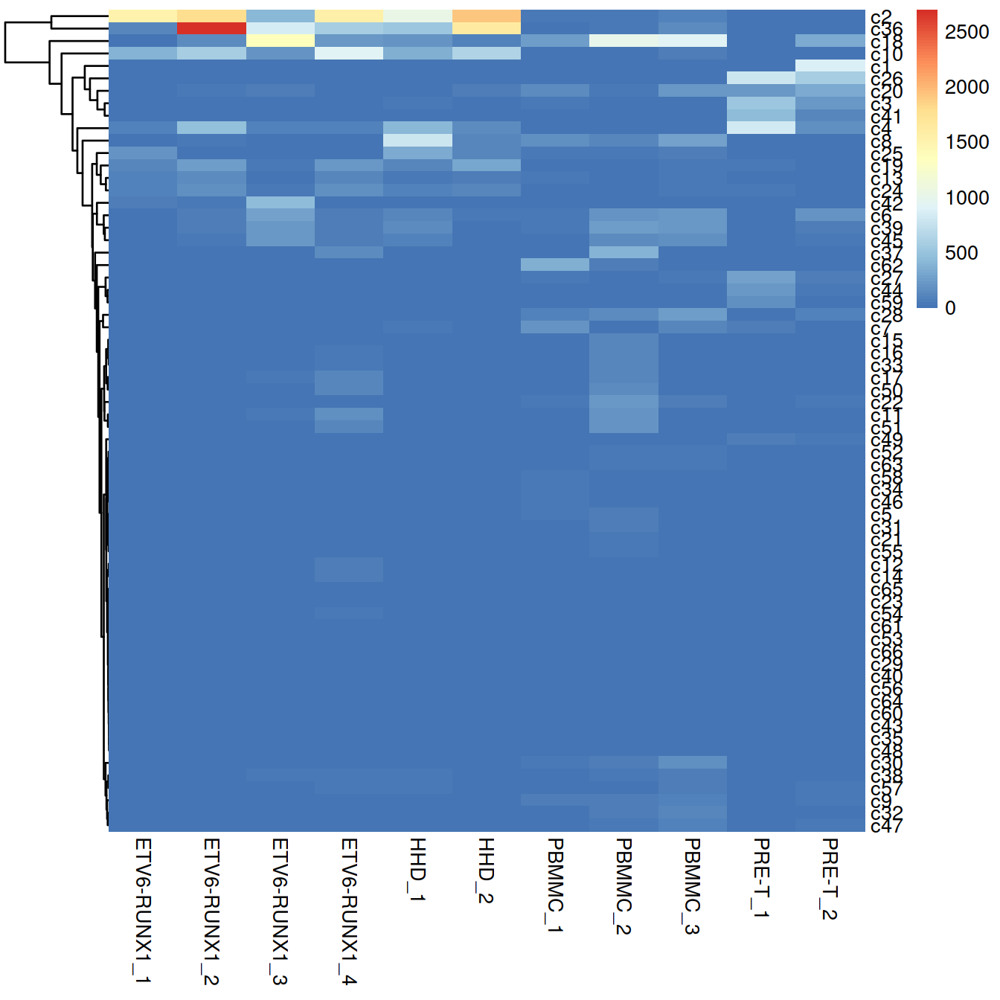
library(scater)
set.seed(0010101010)
mnn.out <- runTSNE(mnn.out, dimred="corrected")
p.batch <- plotTSNE(mnn.out, colour_by="batch")
p.clu <- plotTSNE(mnn.out, colour_by="clusters.mnn")
#gridExtra::grid.arrange(p.clu, p.batch, ncol=2)
gridExtra::grid.arrange(p.clu, p.batch+facet_wrap(~mnn.out$type), ncol=2)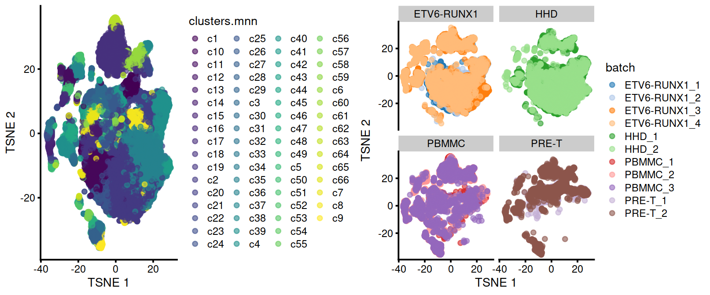
Write mnn.out object to file
colData(mnn.out) <- cbind(colData(uncorrected),colData(mnn.out)[,c("type", "clusters.mnn")])
# Write object to file
# fastMnnWholeByList -> Fmwbl
tmpFn <- sprintf("%s/%s/Robjects/%s_sce_nz_postDeconv%s_Fmwbl.Rds", projDir, outDirBit, setName, setSuf)
saveRDS(mnn.out, tmpFn)
tmpFn <- sprintf("%s/%s/Robjects/%s_sce_nz_postDeconv%s_Fmwbl2.Rds", projDir, outDirBit, setName, setSuf)
saveRDS(list("chosen.hvgs"=chosen.hvgs, "uncorrected"=uncorrected,"rescaled.mbn"=rescaled.mbn), tmpFn)Proportions of lost variance
## ETV6-RUNX1_1 ETV6-RUNX1_2 ETV6-RUNX1_3 ETV6-RUNX1_4 HHD_1 HHD_2
## [1,] 0.000000000 0.000000000 0.00000000 0.00000000 0.00000000 0.00000000
## [2,] 0.000000000 0.000000000 0.00000000 0.00000000 0.01079507 0.03060563
## [3,] 0.000000000 0.000000000 0.00000000 0.00000000 0.00000000 0.00000000
## [4,] 0.000000000 0.000000000 0.00000000 0.00000000 0.00000000 0.00000000
## [5,] 0.017172859 0.023902496 0.00000000 0.00000000 0.00000000 0.00000000
## [6,] 0.008978858 0.007648388 0.03794260 0.00000000 0.00000000 0.00000000
## [7,] 0.001911633 0.002032952 0.00601280 0.05552391 0.00000000 0.00000000
## [8,] 0.037686543 0.036119614 0.11166554 0.15752586 0.00000000 0.00000000
## [9,] 0.013632906 0.017484058 0.03405170 0.03724725 0.06993428 0.08494841
## [10,] 0.018112512 0.018197771 0.02578305 0.02708306 0.02106184 0.02089790
## PRE-T_1 PRE-T_2 PBMMC_1 PBMMC_2 PBMMC_3
## [1,] 0.01767670 0.01496369 0.000000000 0.000000000 0.00000000
## [2,] 0.00000000 0.00000000 0.000000000 0.000000000 0.00000000
## [3,] 0.00000000 0.00000000 0.044327324 0.177401113 0.00000000
## [4,] 0.00000000 0.00000000 0.004530961 0.004332593 0.07142984
## [5,] 0.00000000 0.00000000 0.000000000 0.000000000 0.00000000
## [6,] 0.00000000 0.00000000 0.000000000 0.000000000 0.00000000
## [7,] 0.00000000 0.00000000 0.000000000 0.000000000 0.00000000
## [8,] 0.00000000 0.00000000 0.018866504 0.019922131 0.01752755
## [9,] 0.00000000 0.00000000 0.015351173 0.048171864 0.01937957
## [10,] 0.06526886 0.11916262 0.020463688 0.023654810 0.01798412tmpData <- metadata(mnn.out)$merge.info$lost.var
pheatmap::pheatmap(tmpData,
border_color = NA,
drop_levels = TRUE,
cluster_rows = FALSE,
cluster_cols = FALSE
)
Comparison to within-batch clusters
library(pheatmap)
mnn.out$batch <- factor(mnn.out$batch) # somehow need to re-factor batch
levels(mnn.out$batch)## [1] "ETV6-RUNX1_1" "ETV6-RUNX1_2" "ETV6-RUNX1_3" "ETV6-RUNX1_4" "HHD_1"
## [6] "HHD_2" "PBMMC_1" "PBMMC_2" "PBMMC_3" "PRE-T_1"
## [11] "PRE-T_2"# For the first batch (adding +10 for a smoother color transition
# from zero to non-zero counts for any given matrix entry).
batchPlace <- 1
tmpInd <- mnn.out$batch==levels(mnn.out$batch)[batchPlace]
length(paste("after", clusters.mnn[tmpInd]))## [1] 2853## class: SingleCellExperiment
## dim: 18431 2853
## metadata(0):
## assays(2): counts logcounts
## rownames(18431): ENSG00000000003 ENSG00000000419 ... ENSG00000285486
## ENSG00000285492
## rowData names(11): ensembl_gene_id external_gene_name ... detected
## gene_sparsity
## colnames: NULL
## colData names(20): Sample Barcode ... label batch
## reducedDimNames(1): PCA
## altExpNames(0):## DataFrame with 6 rows and 20 columns
## Sample Barcode Run Sample.Name source_name
## <character> <character> <character> <character> <factor>
## 1 /ssd/personal/baller.. AAACCTGAGACTTTCG-1 SRR9264343 GSM3872434 ETV6-RUNX1
## 2 /ssd/personal/baller.. AAACCTGGTCTTCAAG-1 SRR9264343 GSM3872434 ETV6-RUNX1
## 3 /ssd/personal/baller.. AAACCTGGTGTTGAGG-1 SRR9264343 GSM3872434 ETV6-RUNX1
## 4 /ssd/personal/baller.. AAACCTGTCCCAAGTA-1 SRR9264343 GSM3872434 ETV6-RUNX1
## 5 /ssd/personal/baller.. AAACCTGTCGAATGCT-1 SRR9264343 GSM3872434 ETV6-RUNX1
## 6 /ssd/personal/baller.. AAACGGGCACCATCCT-1 SRR9264343 GSM3872434 ETV6-RUNX1
## sum detected subsets_Mito_sum subsets_Mito_detected
## <numeric> <integer> <numeric> <integer>
## 1 6462 1996 290 12
## 2 11706 3079 567 12
## 3 7981 2511 423 12
## 4 8354 2307 519 13
## 5 1373 701 91 11
## 6 2142 985 102 10
## subsets_Mito_percent total block setName discard outlier
## <numeric> <numeric> <factor> <character> <logical> <logical>
## 1 4.48777 6462 ETV6-RUNX1 Caron FALSE FALSE
## 2 4.84367 11706 ETV6-RUNX1 Caron FALSE FALSE
## 3 5.30009 7981 ETV6-RUNX1 Caron FALSE FALSE
## 4 6.21259 8354 ETV6-RUNX1 Caron FALSE FALSE
## 5 6.62782 1373 ETV6-RUNX1 Caron FALSE FALSE
## 6 4.76190 2142 ETV6-RUNX1 Caron FALSE FALSE
## cell_sparsity sizeFactor Sample.Name2 label batch
## <numeric> <numeric> <character> <factor> <character>
## 1 0.907503 2.645503 ETV6-RUNX1_1 11 ETV6-RUNX1_1
## 2 0.857361 4.791955 ETV6-RUNX1_1 9 ETV6-RUNX1_1
## 3 0.883637 3.267372 ETV6-RUNX1_1 2 ETV6-RUNX1_1
## 4 0.893091 3.420076 ETV6-RUNX1_1 13 ETV6-RUNX1_1
## 5 0.967515 0.562098 ETV6-RUNX1_1 6 ETV6-RUNX1_1
## 6 0.954400 0.876512 ETV6-RUNX1_1 7 ETV6-RUNX1_1## [1] 2853##
## after 10 after 11 after 13 after 15 after 16 after 17 after 18 after 19
## 400 1 98 2 1 1 12 132
## after 2 after 20 after 22 after 24 after 25 after 3 after 35 after 36
## 1526 9 1 93 213 5 1 129
## after 38 after 39 after 4 after 42 after 43 after 44 after 45 after 49
## 4 4 105 56 1 1 2 2
## after 51 after 53 after 54 after 58 after 59 after 6 after 7 after 8
## 3 21 1 1 6 7 9 6##
## before 1 before 10 before 11 before 12 before 13 before 14 before 2 before 3
## 406 93 59 61 466 7 65 31
## before 4 before 5 before 6 before 7 before 8 before 9
## 84 32 664 340 483 62tab <- table(paste("after", clusters.mnn[tmpInd]),
paste("before", colLabels(rescaled.mbn[[batchPlace]])))
heat1 <- pheatmap(
log10(tab+10),
cluster_row=FALSE,
cluster_col=FALSE,
main=sprintf("%s comparison", splVec[batchPlace]),
silent=TRUE)
# For the second batch.
batchPlace <- 2
tmpInd <- mnn.out$batch==levels(mnn.out$batch)[batchPlace]
tab <- table(paste("after", clusters.mnn[tmpInd]),
paste("before", colLabels(rescaled.mbn[[batchPlace]])))
heat2 <- pheatmap(
log10(tab+10),
cluster_row=FALSE,
cluster_col=FALSE,
main=sprintf("%s comparison", splVec[batchPlace]),
silent=TRUE)
gridExtra::grid.arrange(heat1[[4]], heat2[[4]])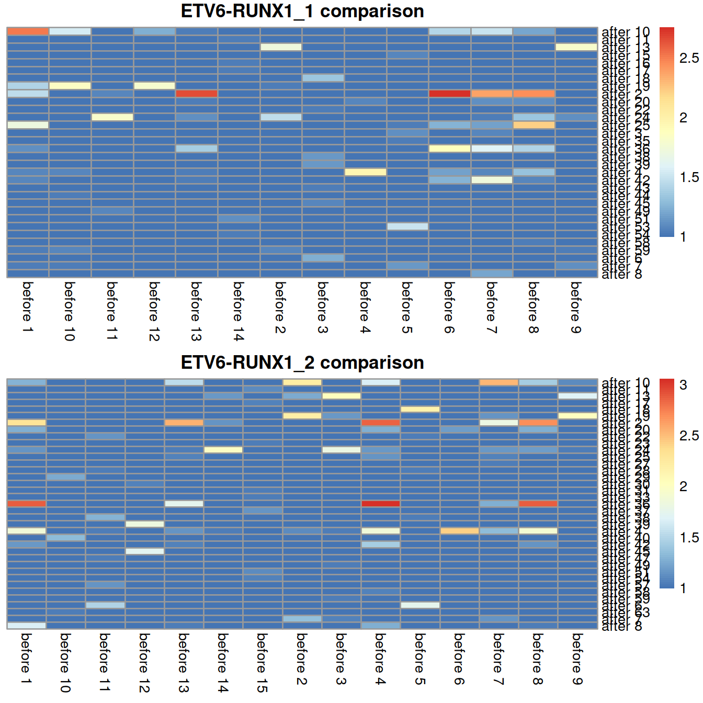
Co-assignment probabilities
# For the first batch.
batchPlace <- 1
tmpInd <- mnn.out$batch==levels(mnn.out$batch)[batchPlace]
tab <- coassignProb(colLabels(rescaled.mbn[[batchPlace]]), clusters.mnn[tmpInd])
heat1 <- pheatmap(
tab,
cluster_row=FALSE,
cluster_col=FALSE,
col=rev(viridis::magma(100)),
main=sprintf("%s probabilities", splVec[batchPlace]),
silent=TRUE)
# For the second batch.
batchPlace <- 2
tmpInd <- mnn.out$batch==levels(mnn.out$batch)[batchPlace]
tab <- coassignProb(colLabels(rescaled.mbn[[batchPlace]]), clusters.mnn[tmpInd])
heat2 <- pheatmap(
tab,
cluster_row=FALSE,
cluster_col=FALSE,
col=rev(viridis::magma(100)),
main=sprintf("%s probabilities", splVec[batchPlace]),
silent=TRUE)
gridExtra::grid.arrange(heat1[[4]], heat2[[4]])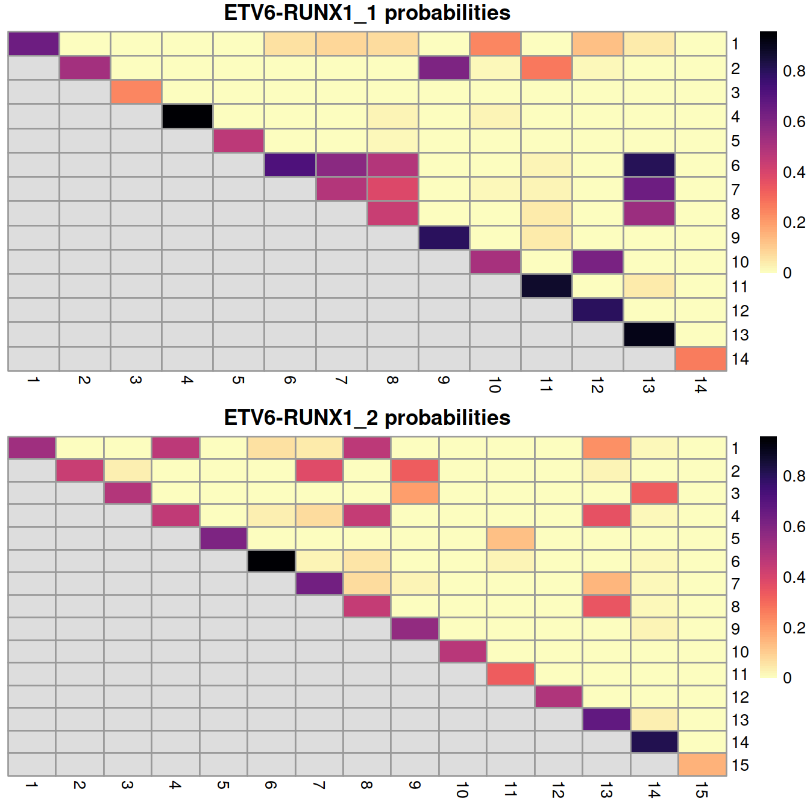
Rand index:
library(fossil)
batchPlace <- 1
tmpInd <- mnn.out$batch==levels(mnn.out$batch)[batchPlace]
ri1 <- rand.index(as.integer(clusters.mnn[tmpInd]),
as.integer(colLabels(rescaled.mbn[[batchPlace]])))
ri1## [1] 0.7285867batchPlace <- 2
tmpInd <- mnn.out$batch==levels(mnn.out$batch)[batchPlace]
ri2 <- rand.index(as.integer(clusters.mnn[tmpInd]),
as.integer(colLabels(rescaled.mbn[[batchPlace]])))
ri2## [1] 0.7373159Cluster markers:
m.out <- findMarkers(
uncorrected,
clusters.mnn,
block=uncorrected$batch,
direction="up",
lfc=1,
row.data=rowData(uncorrected)[,
c("ensembl_gene_id","Symbol"),
drop=FALSE])## Symbol Top p.value FDR
## ENSG00000026025 VIM 1 3.261422e-169 4.623943e-166
## ENSG00000034510 TMSB10 1 3.417467e-25 9.401096e-23
## ENSG00000087086 FTL 1 1.000000e+00 1.000000e+00
## ENSG00000106123 EPHB6 1 2.120372e-95 1.563223e-92
## ENSG00000110848 CD69 1 4.005738e-09 5.273554e-07
## ENSG00000111348 ARHGDIB 1 2.204008e-47 9.027125e-45
## ENSG00000115085 ZAP70 1 6.211844e-02 1.000000e+00
## ENSG00000124766 SOX4 1 1.675786e-218 2.807856e-215
## ENSG00000136161 RCBTB2 1 1.185587e-124 1.092578e-121
## ENSG00000137731 FXYD2 1 1.220771e-62 5.769237e-60
## ENSG00000138326 RPS24 1 5.909752e-11 9.153163e-09
## ENSG00000161970 RPL26 1 0.000000e+00 0.000000e+00
## ENSG00000163682 RPL9 1 1.024456e-16 2.145653e-14
## ENSG00000167286 CD3D 1 1.863341e-238 5.723874e-235
## ENSG00000167526 RPL13 1 4.376031e-37 1.521786e-34
## ENSG00000169442 CD52 1 1.004943e-80 5.974871e-78
## ENSG00000173762 CD7 1 2.642735e-29 7.856169e-27
## ENSG00000184009 ACTG1 1 4.823072e-150 5.926270e-147
## ENSG00000198712 MT-CO2 1 3.039516e-05 3.314871e-03
## ENSG00000198755 RPL10A 1 3.001145e-20 7.375213e-18Expression level fot the top gene, VIM, (ENSG00000026025):
geneEnsId <- rownames(demo)[1]
plotExpression(
uncorrected,
x=I(factor(clusters.mnn)),
features=geneEnsId,
colour_by="batch") +
facet_wrap(~colour_by)
19.8 Session information
## R version 4.0.3 (2020-10-10)
## Platform: x86_64-pc-linux-gnu (64-bit)
## Running under: CentOS Linux 8
##
## Matrix products: default
## BLAS: /opt/R/R-4.0.3/lib64/R/lib/libRblas.so
## LAPACK: /opt/R/R-4.0.3/lib64/R/lib/libRlapack.so
##
## locale:
## [1] LC_CTYPE=en_GB.UTF-8 LC_NUMERIC=C
## [3] LC_TIME=en_GB.UTF-8 LC_COLLATE=en_GB.UTF-8
## [5] LC_MONETARY=en_GB.UTF-8 LC_MESSAGES=en_GB.UTF-8
## [7] LC_PAPER=en_GB.UTF-8 LC_NAME=C
## [9] LC_ADDRESS=C LC_TELEPHONE=C
## [11] LC_MEASUREMENT=en_GB.UTF-8 LC_IDENTIFICATION=C
##
## attached base packages:
## [1] parallel stats4 stats graphics grDevices utils datasets
## [8] methods base
##
## other attached packages:
## [1] edgeR_3.32.1 DelayedArray_0.16.3
## [3] RColorBrewer_1.1-2 reticulate_1.18
## [5] purrr_0.3.4 tidyr_1.1.3
## [7] tibble_3.1.1 broom_0.7.6
## [9] leiden_0.3.7 cluster_2.1.0
## [11] dynamicTreeCut_1.63-1 bluster_1.0.0
## [13] fossil_0.4.0 shapefiles_0.7
## [15] foreign_0.8-80 maps_3.3.0
## [17] sp_1.4-5 clustree_0.4.3
## [19] ggraph_2.0.5 pheatmap_1.0.12
## [21] harmony_1.0 Rcpp_1.0.6
## [23] batchelor_1.6.3 SeuratObject_4.0.0
## [25] Seurat_4.0.1 limma_3.46.0
## [27] ggfortify_0.4.11 BiocSingular_1.6.0
## [29] scuttle_1.0.4 robustbase_0.93-7
## [31] mixtools_1.2.0 Cairo_1.5-12.2
## [33] dplyr_1.0.5 DT_0.18
## [35] irlba_2.3.3 biomaRt_2.46.3
## [37] Matrix_1.2-18 igraph_1.2.6
## [39] DropletUtils_1.10.3 scater_1.18.6
## [41] ggplot2_3.3.3 scran_1.18.7
## [43] SingleCellExperiment_1.12.0 SummarizedExperiment_1.20.0
## [45] Biobase_2.50.0 GenomicRanges_1.42.0
## [47] GenomeInfoDb_1.26.7 IRanges_2.24.1
## [49] S4Vectors_0.28.1 BiocGenerics_0.36.1
## [51] MatrixGenerics_1.2.1 matrixStats_0.58.0
## [53] knitr_1.32
##
## loaded via a namespace (and not attached):
## [1] rappdirs_0.3.1 scattermore_0.7
## [3] R.methodsS3_1.8.1 bit64_4.0.5
## [5] R.utils_2.10.1 data.table_1.14.0
## [7] rpart_4.1-15 RCurl_1.98-1.3
## [9] generics_0.1.0 cowplot_1.1.1
## [11] RSQLite_2.2.6 RANN_2.6.1
## [13] future_1.21.0 bit_4.0.4
## [15] spatstat.data_2.1-0 xml2_1.3.2
## [17] httpuv_1.5.5 assertthat_0.2.1
## [19] viridis_0.5.1 xfun_0.22
## [21] hms_1.0.0 jquerylib_0.1.3
## [23] evaluate_0.14 promises_1.1.1
## [25] DEoptimR_1.0-8 fansi_0.4.2
## [27] progress_1.2.2 dbplyr_2.0.0
## [29] DBI_1.1.1 htmlwidgets_1.5.3
## [31] spatstat.geom_2.1-0 ellipsis_0.3.1
## [33] RSpectra_0.16-0 backports_1.2.1
## [35] bookdown_0.21 deldir_0.2-10
## [37] sparseMatrixStats_1.2.1 vctrs_0.3.7
## [39] ROCR_1.0-11 abind_1.4-5
## [41] cachem_1.0.4 withr_2.4.2
## [43] ggforce_0.3.3 checkmate_2.0.0
## [45] sctransform_0.3.2.9005 prettyunits_1.1.1
## [47] goftest_1.2-2 segmented_1.3-3
## [49] lazyeval_0.2.2 crayon_1.4.1
## [51] labeling_0.4.2 pkgconfig_2.0.3
## [53] tweenr_1.0.2 nlme_3.1-149
## [55] vipor_0.4.5 rlang_0.4.10
## [57] globals_0.14.0 lifecycle_1.0.0
## [59] miniUI_0.1.1.1 BiocFileCache_1.14.0
## [61] rsvd_1.0.3 polyclip_1.10-0
## [63] lmtest_0.9-38 Rhdf5lib_1.12.1
## [65] zoo_1.8-9 beeswarm_0.2.3
## [67] ggridges_0.5.3 png_0.1-7
## [69] viridisLite_0.3.0 bitops_1.0-6
## [71] R.oo_1.24.0 KernSmooth_2.23-17
## [73] rhdf5filters_1.2.0 blob_1.2.1
## [75] DelayedMatrixStats_1.12.3 stringr_1.4.0
## [77] parallelly_1.24.0 readr_1.4.0
## [79] beachmat_2.6.4 scales_1.1.1
## [81] memoise_2.0.0 magrittr_2.0.1
## [83] plyr_1.8.6 ica_1.0-2
## [85] zlibbioc_1.36.0 compiler_4.0.3
## [87] dqrng_0.2.1 fitdistrplus_1.1-3
## [89] XVector_0.30.0 listenv_0.8.0
## [91] patchwork_1.1.1 pbapply_1.4-3
## [93] MASS_7.3-53 mgcv_1.8-33
## [95] tidyselect_1.1.0 stringi_1.5.3
## [97] highr_0.8 yaml_2.2.1
## [99] askpass_1.1 locfit_1.5-9.4
## [101] ggrepel_0.9.1 grid_4.0.3
## [103] sass_0.3.1 tools_4.0.3
## [105] future.apply_1.7.0 rstudioapi_0.13
## [107] gridExtra_2.3 farver_2.1.0
## [109] Rtsne_0.15 digest_0.6.27
## [111] FNN_1.1.3 shiny_1.5.0
## [113] later_1.1.0.1 RcppAnnoy_0.0.18
## [115] httr_1.4.2 AnnotationDbi_1.52.0
## [117] kernlab_0.9-29 colorspace_2.0-0
## [119] XML_3.99-0.5 tensor_1.5
## [121] splines_4.0.3 uwot_0.1.10
## [123] statmod_1.4.35 spatstat.utils_2.1-0
## [125] graphlayouts_0.7.1 plotly_4.9.3
## [127] xtable_1.8-4 jsonlite_1.7.2
## [129] tidygraph_1.2.0 R6_2.5.0
## [131] pillar_1.6.0 htmltools_0.5.1.1
## [133] mime_0.10 glue_1.4.2
## [135] fastmap_1.1.0 BiocParallel_1.24.1
## [137] BiocNeighbors_1.8.2 codetools_0.2-16
## [139] utf8_1.2.1 lattice_0.20-41
## [141] bslib_0.2.4 spatstat.sparse_2.0-0
## [143] ResidualMatrix_1.0.0 curl_4.3
## [145] ggbeeswarm_0.6.0 openssl_1.4.3
## [147] survival_3.2-7 rmarkdown_2.7
## [149] munsell_0.5.0 rhdf5_2.34.0
## [151] GenomeInfoDbData_1.2.4 HDF5Array_1.18.1
## [153] reshape2_1.4.4 gtable_0.3.0
## [155] spatstat.core_2.1-2# OLD
#projDir <- "/mnt/scratcha/bioinformatics/baller01/20200511_FernandesM_ME_crukBiSs2020"
projDir <- "/data/personal/baller01/20200511_FernandesM_ME_crukBiSs2020"
outDirBit <- "AnaWiSce/Attempt3"
nbPcToComp <- 50
splSetToGet <- "PBMMC,ETV6-RUNX1" # params may not be read in if knitting book.
splSetVec <- unlist(strsplit(splSetToGet, ",")) # params may not be read in if knittingprojDir <- params$projDir
dirRel <- params$dirRel
outDirBit <- params$outDirBit
cacheBool <- params$cacheBool
setName <- params$setName
splSetToGet <- params$splSetToGet
setSuf <- params$setSuf
dsiSuf <- params$dsiSuf # 'dsi' for data set integration
if(params$bookType == "mk"){
setName <- "caron"
splSetToGet <- "PBMMC,ETV6-RUNX1"
setSuf <- "_5hCellPerSpl"
dsiSuf <- '_dsi'
}
splSetVec <- unlist(strsplit(splSetToGet, ",")) # params may not be read in if knitting book.
splSetToGet2 <- gsub(",", "_", splSetToGet)
nbPcToComp <- 50
figSize <- 7
anaStg <- sprintf("'%s_%s'", splSetToGet2, setSuf)
#displayToUse <- Sys.getenv("DISPLAY")
#Cairo::CairoX11(display=displayToUse);#```{r setup, include=FALSE, echo=FALSE}
# removing chunk name for now because would need to make it dynamic, eg {{anaStg}} and expand
# TODO do that later
# First, set some variables:
require(knitr)
opts_chunk$set(error=FALSE, message=FALSE, warning=FALSE, cache=cacheBool)
opts_chunk$set(echo = TRUE)
opts_chunk$set(eval = TRUE)
opts_chunk$set(dev="CairoPNG")
opts_chunk$set(fig.width=7, fig.height=7)
#opts_chunk$set(dev = c("png"))
#options(bitmapType='cairo')
options(stringsAsFactors = FALSE)
set.seed(123) # for reproducibility## cairo
## TRUE## [1] "Xlib"## [1] "cairo"library(ggplot2)
library(scater)
library(scran)
library(dplyr)
library(dynamicTreeCut)
library(cluster) # for silhouette
library(igraph) # for graph-based clustering and plotting networks
library(leiden) # for community detection
fontsize <- theme(axis.text=element_text(size=12), axis.title=element_text(size=16))